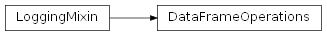

SentimentAnalysis.src.data_structures package
Submodules
SentimentAnalysis.src.data_structures.checkpoint module
checkpoint.py
Version 1.0, updated on 2025-05-01
- class SentimentAnalysis.src.data_structures.checkpoint.Checkpoint(data: str = '', name: str = '')[source]
Bases:
DataSerializationMixinCheckpoint class.
This class represents a checkpoint, encapsulating data and its associated name. It also provides methods for serialization and deserialization of the checkpoint data through the ‘DataSerializationMixin’.
- data
The textual content of the checkpoint.
- Type:
str
- name
The name associated with the checkpoint data, typically used as the file name when saving or loading data.
- Type:
str
- file_name
The name of the file derived from ‘name’, used for saving or loading the checkpoint data.
- Type:
str
- file_type
The file type used for serialization, defaulting to ‘txt’.
- Type:
str
- __init__(data: str = '', name: str = '') None[source]
Constructor.
Initializes a new instance of the Checkpoint class with the provided parameters.
- Parameters:
data (str) – The data to be stored in the checkpoint. Defaults to an empty string.
name (str) – The name associated with the checkpoint data. Defaults to an empty string.
- property data: str
Gets the data.
- property name: str
Gets the name of the data.
SentimentAnalysis.src.data_structures.data_collection module
data_collection.py
Version 1.0, updated on 2025-05-01
- class SentimentAnalysis.src.data_structures.data_collection.DataCollection(data: T | None, name: str = '')[source]
Bases:
ABC,Generic[T],LoggingMixinAbstract base class for different data collection structures. It defines functionalities like filtering and extracting data subsets by the content of given columns, and automatically eliminating columns with no informational value.
- data T | None
The data, which can be stored in different types of data structures, e.g. a pandas dataframe or a HuggingFace DatasetDict. .
- name
An optional name for the data, providing a human-readable identifier for data saving, logging and tracking purposes.
- Type:
str
- single_value_cols
A dictionary where the keys are column names and the values are the single unique value found in that column, if applicable. This is used to track columns that may not be informative.
- Type:
dict[str, Any]
- n_single_value_cols
The number of columns that have been identified as containing no values or only a single unique value.
- Type:
int
- Abstract Attributes
- -------------------
- n_rows
The number of rows in the data.
- Type:
int
- n_cols
The number of columns in the data.
- Type:
int
- col_names
A list of the column names in the data. Must be implemented by subclasses.
- Type:
List[str]
- has_data() bool:[source]
Checks if the data is set and is not None or empty. Returns True if the data exists, False otherwise.
- to_string() str:[source]
Returns a string representation of the data, including basic metadata such as the number of rows and columns, column names, and any single-value columns identified and removed.
- Abstract Methods
- ----------------
- filter_rows_by_col_value(col_name: str, col_value: Any) T:[source]
Extracts all rows from the data where the value in the given column matches the specified column value and returns them in the same type of data structure as the original data. Must be implemented by subclasses.
- drop_single_value_cols() None:[source]
Removes identified single-value columns from the data to streamline the data set.
- find_single_value_cols() None:[source]
Identifies columns in the data that contain no values or only a single value, marking them for potential removal. This method sets the ‘single_value_cols’ property.
- has_no_data(verbose: bool = True) bool:[source]
Checks if the data is None or empty. If the ‘verbose’ parameter is set to True, a warning message is logged in case the data is None or empty.
- min_filter(col_name: str, min_value: Any) -> T:
Extracts all rows from the data where the value in the given column is greater than or equal to the specified minimum value. Must be implemented by subclasses.
- max_filter(col_name: str, max_value: Any) -> T:
Extracts all rows from the data where the value in the given column is smaller than or equal to the specified maximum value. Must be implemented by subclasses.
- __init__(data: T | None, name: str = '') None[source]
Constructor.
Initializes a new instance of this base class with any type of data collection and an identifying name.
- Parameters:
data (T | None) – The data wrapped in this class.
name (str) – A name identifying the data, used for naming files when saving the data or information related to it.
- abstract property col_names: List[str]
Returns the column names of the data object.
The way how the list of column names is provided by the data object of the different subclasses depends on the data type of the data object. Therefore, this property is abstract and must be implemented by the subclasses.
- property data: T | None
Gets the data.
- abstract drop_single_value_cols() None[source]
Removes all columns from the DatasetDict that have no informational value.
Empty columns and columns that only have one single value across the dataset are dropped.
- abstract filter_rows_by_col_value(col_name: str, col_value: Any) T[source]
Extracts all rows from the data where the value in a given column matches the specified column value.
- Parameters:
col_name (str) – The name of the column in which to seek for the specified value.
col_value (Any) – The value for which to seek in the specified column
- Returns:
A new MyDataFrame containing the extracted rows.
- Return type:
T
- abstract find_single_value_cols() None[source]
Finds empty and single-value columns to set the ‘single_value_cols’ property.
Finds columns that have no values or that only have one single value across the entire dataset. Such columns are considered as irrelevant, so that they can be dropped from the dataset. Nevertheless, their names and values are kept in a dictionary so that the information about which columns and values have been removed can be retrieved even after the columns have been dropped.
Notes
The result of this method is a dictionary containing the names and the single value (if any) of columns identified as having no or a single unique value (format: {col_name: col_value}). The resulting dictionary is not returned, but used to set the ‘single_value_cols’ property.
- has_data() bool[source]
Checks if the data is set and is not None or empty.
- Returns:
True if the data exists, False otherwise.
- Return type:
bool
- abstract has_no_data(verbose: bool = True) bool[source]
Checks if the data is None or empty.
If the ‘verbose’ parameter is set to True, a warning message is logged in case the data is None or empty.
- Returns:
True if the data is None or empty, False otherwise.
- Return type:
bool
- abstract max_filter(col_name: str, max_value: Any) T[source]
Extracts all rows from the data where the value in a given column is smaller than or equal to the specified minimum value.
- Parameters:
col_name (str) – The name of the column in which to seek for the specified value.
max_value (Any) – The maximum value with which to compare the values in the specified column
- Returns:
A new MyDataFrame containing the extracted rows.
- Return type:
T
- abstract min_filter(col_name: str, min_value: Any) T[source]
Extracts all rows from the data where the value in a given column is greater than or equal to the specified minimum value.
- Parameters:
col_name (str) – The name of the column in which to seek for the specified value.
min_value (Any) – The minimum value with which to compare the values in the specified column
- Returns:
A new MyDataFrame containing the extracted rows.
- Return type:
T
- abstract property n_cols: int
Returns the number of columns in the data.
- abstract property n_rows: int
Returns the number of rows in the data.
- property n_single_value_cols: int
Returns the number of single-value columns.
- property name: str
Gets the name of the data.
- property single_value_cols: dict[str, Any]
Gets the single value columns from the data.
If they are not set, the find_single_value_cols method will be called, which will set the single_value_cols so that they can be returned.
- to_string()[source]
Returns a string representation of the data.
- Returns:
A string representation of the data.
- Return type:
str
Notes
The content of this method is not inserted in the __str__ method because this is executed each time the class is viewed in the debugger. This is extremely confusing, especially if the string representation uses computed properties.
SentimentAnalysis.src.data_structures.data_frame_column_operations module
data_frame_column_operations.py
Version 1.0, updated on 2025-01-25
- class SentimentAnalysis.src.data_structures.data_frame_column_operations.DataFrameColumnOperations(my_dataframe: MyDataFrame)[source]
Bases:
DataFrameOperationsDataFrameColumnOperations class.
Provides column-specific operations for a MyDataFrame instance.
This class extends DataFrameOperations to include methods that perform operations specifically on the columns of a MyDataFrame object. It allows for the addition, removal and modification of DataFrame columns.
Inherited Parameters
- my_dfMyDataFrame
An instance of MyDataFrame on which column operations will be performed. This parameter is inherited from the DataFrameOperations base class.
- add_column(data: DataFrame | dict | list | None = None,
col_name: str = ‘’) -> None:
Adds a new column to the DataFrame with the specified data.
- add_empty_bool_cols(col_names: list[str]) None:[source]
Adds empty boolean columns to the DataFrame.
- add_empty_float_cols(col_names: list[str]) None:[source]
Adds empty floating-point columns to the DataFrame in the MyDataFrame object.
- add_empty_int_cols(col_names: list[str]) None:[source]
Adds empty integer columns to the DataFrame wrapped in the MyDataFrame object.
- are_cols_identical(col_name: str, other: MyDataFrame, other_col_name: str)[source]
-> bool:
Checks if a column in other data is identical with the current data.
- extract_columns(col_names: List[str]) DataFrame:[source]
Extracts a DataFrame with the specified columns.
- extract_columns_by_name_substring(substring: str) DataFrame:[source]
Extracts the columns whose names contain the specified substring.
- find_identical_cols(other: DataFrame) List[str]:[source]
Finds columns in two DataFrames that have identical values in all rows.
- get_col_index_by_col_name(col_name: str) int:[source]
Returns the index of the specified column by its name.
- get_col_name_by_col_index(col_index: int) str:[source]
Returns the name of the column at the specified index.
- get_col_names_by_substring(substring: str) List[str]:[source]
Returns the column names that contain the given substring.
- def get_unique_values_by_col_name(col_name: str) -> List[Any]:
Returns the unique values of a given column in the DataFrame.
- merge(other: MyDataFrame | DataFrame | Chunk) None:[source]
Adds the columns of another DataFrame to the current DataFrame.
- merge_transposed(other: MyDataFrame) None:[source]
Merges two transposed DataFrames.
See also
DataFrameRowOperationsProvides row-specific operations for a MyDataFrame instance.
DataFrameFieldOperationsProvides field-specific operations for a MyDataFrame instance.
DataFrameOperationsBase class providing common MyDataFrame operations.
Examples
>>> my_df_instance = MyDataFrame() >>> column_operations = DataFrameColumnOperations(my_df_instance) >>> column_operations.add_empty_int_cols(['age', 'year']) Adds empty integer columns named 'age' and 'year' to my_df_instance.
- _check_indices(other: DataFrame) bool[source]
Checks if the indices of the two DataFrames are compatible.
Checks if the two DataFrames have the same indices or if they are safe to be merged.
- Parameters:
other (DataFrame) – The other DataFrame to compare with.
- Returns:
True if the two DataFrames have the same index, False otherwise.
- Return type:
bool
- Raises:
CriticalException – If the two DataFrames have incompatible indices: - same number of indices but different names - different number of indices but no intersection of indices.
- add_column(data: Any | None = None, col_name: str = '') None[source]
Add a column to the DataFrame.
If the column comes in a DataFrame format, its indices are checked to ensure the column can be safely added to the DataFrame.
- Parameters:
data (Any | None) – The column data to add to the DataFrame. Defaults to None.
col_name (str) – The name of the new column. If it is not provided, the number of existing columns increased by 1 is appended to the string “Column_” to get a new column name. Default is None.
- Raises:
CriticalException – If the index of the column and the index of the DataFrame are incompatible and cannot be merged.
Notes
If data is not provided, the new column contains nothing but None values.
If ‘data’ is a data structure that can be mapped to the fields of the column like a DataFrame, a Series, a dictionary or a list, it is supposed to contain the different values of the fields in the new column. For this, its length must be the same as the number of rows in the DataFrame.
If ‘data’ is not a data structure that can be mapped to the fields of the column, all fields in the new column will be set to the value of ‘data’.
if the column DataFrame and the current DataFrame have different indices, the indices are checked if they can be merged.
- add_empty_bool_cols(col_names: list[str]) None[source]
Adds empty columns designed to hold boolean values to the dataframe.
- Parameters:
col_names (list[str]) – The names of the columns to add.
- add_empty_float_cols(col_names: list[str]) None[source]
Adds empty columns to the dataframe that are designed to hold floating-point numbers.
- Parameters:
col_names (list[str]) – The names of the columns to add.
Notes
The pandas dtype used is ‘Float64’ instead of ‘float64’ to conform with the add_empty_int_cols method.
- add_empty_int_cols(col_names: list[str]) None[source]
Adds empty columns to the dataframe that are designed to hold integer values to the dataframe.
- Parameters:
col_names (list[str]) – The names of the columns to add.
Notes
The pandas dtype used is ‘Int64’ instead of ‘int’ because Int64 is a nullable object, which allows for missing values in the dataframe, whereas int64 switches to float64 if a value is NaN.
- add_empty_str_cols(col_names: list[str]) None[source]
Adds empty columns to the dataframe that are designed to hold string values.
- Parameters:
col_names (list[str]) – List of names of the columns to add.
Notes
The newer ‘string’ dtype is used instead of ‘str’, which pandas traditionally stores as an object. ‘String’ has better string handling features, such as support of missing values.
- add_sums(col_name: str = 'Sum', sort: bool = False) None[source]
Adds a sum column to the DataFrame.
- Parameters:
col_name (str) – The name of the sum column. Default to ‘Sum’
sort (bool) – If True, the sum column is sorted in descending order. Defaults to False.
Notes
The DataFrame is modified in place.
- are_cols_identical(col_name: str, other: MyDataFrame, other_col_name: str) bool[source]
Checks if a column in other data is identical with the current data.
Checks if the specified column in the current data and in the other data structure are identical.
- Parameters:
col_name (str) – The name of the column in the current data.
other (MyDataFrame) – The other data structure to compare with.
other_col_name (str) – The name of the column in the other strategy.
- Returns:
True if the columns are identical, False otherwise.
- Return type:
bool
- assign_dtypes(col_type_map: Dict[str, type]) None[source]
Assigns specified dtypes to the columns in the current DataFrame.
Assignes the dtypes provided in the column type map to the DataFrame columns specified in the map.
- Parameters:
col_type_map (Dict[str, type]) – A dictionary mapping column names to their respective data types (e.g., INT, FLOAT), where the keys are the column names and the values the dtypes to assign to the respective columns.
Notes
This method does not return the modified DataFrame. Instead The column types of the DataFrame are changed in place.
- drop_column(col_name: str) None[source]
Removes single column from dataframe.
- Parameters:
col_name (str) – The name of the column to remove.
- drop_columns(col_names: List[str]) None[source]
Removes several columns from dataframe.
- Parameters:
col_names (List[str]) – List of names of the columns to remove.
- extract_columns(col_names: List[str]) DataFrame[source]
Extracts a DataFrame with the specified columns.
Extracts a DataFrame with the specified columns from the current MyDataFrame.
- Parameters:
col_names (List[str]) – The names of the columns to extract.
- Returns:
A DataFrame with the specified columns.
- Return type:
DataFrame
- extract_columns_by_name_substring(substring: str) DataFrame[source]
Extracts the columns whose names contain the specified substring.
Extracts a DataFrame with the columns from the current MyDataFrame whose names contain the specified substring.
- Parameters:
substring (str) – The substring the column names need to contain for the column to be extracted.
- Returns:
A DataFrame with the extracted columns.
- Return type:
DataFrame
- find_identical_cols(other: DataFrame) List[str][source]
Finds columns in two DataFrames that have identical values in all rows.
- Returns:
A list of the names of the columns that have identical values in all rows.
- Return type:
List[str]
- get_col_index_by_col_name(col_name: str) int[source]
Gets the index number of the specified column.
- Parameters:
col_name (str) – The name of the column whose index number is requested.
- Returns:
The index number of the row.
- Return type:
int
- Raises:
KeyError – If the column name is not found in the dataframe.
- get_col_name_by_col_index(col_index: int) str[source]
Returns the name of the column at the specified index.
- Parameters:
col_index (int) – The index of the column to get the name of.
- Returns:
The name of the column at the specified index.
- Return type:
str
- get_col_names_by_substring(substring: str) List[str][source]
Returns the column names that contain the given substring.
Returns the column names from the current MyDataFrame that contain the given substring.
- Parameters:
substring (str) – The substring the returned column names must contain.
- Returns:
The list of column names from the current MyDataFrame that contain the substring.
- Return type:
List[str]
- get_col_type(col_name: str) dtype[source]
Returns the data type of the specified column.
- Parameters:
col_name (str) – The name of the column whose data type is requested.
- Returns:
The data type of the specified column.
- Return type:
np.dtype
- get_unique_values_by_col_name(col_name: str) List[Any][source]
Returns the unique values of a given column in the dataframe.
- Parameters:
col_name (str) – Name of the column whose values are to be extracted. The name equals the category to which the prompt parts or ingredients belong.
- Returns:
List of unique elements of the given column in the data.
- Return type:
List[Any]
- merge(other: MyDataFrame | DataFrame | Chunk) None[source]
Adds the columns of another DataFrame to the current DataFrame.
This method adds the columns of the DataFrame in a data structure compatible to the current MyDataFrame (MyDataFrame, DataFrame, Chunk) to the columns of the DataFrame wrapped in the current MyDataFrame instance, aligning the rows based on their indexes.
- Parameters:
other (MyDataFrame | DataFrame | Chunk) – The other data structure to merge with. The DataFrame in this data structure should have the same index structure as the calling MyDataFrame.
- Raises:
TypeError – If the ‘other’ parameter is not an instance of MyDataFrame.
Notes
- If ‘other’ is a mere DataFrame, it is used to build a MyDataFrame
object so that it can also be merged with the current MyDataFrame.
The merge is done using pandas’ ‘merge’ function with ‘left_index’
and ‘right_index’ set to True, performing a SQL-like left join.
If there are overlapping columns, the values from the other
MyDataFrame will be used.
The merged DataFrame replaces the current DataFrame in this
MyDataFrame instance.
- merge_transposed(other: MyDataFrame) None[source]
Merges two transposed DataFrames.
Merges the current MyDataFrame with another MyDataFrame switching their rows to columns. The columns of the other DataFrame are added to the columns of the DataFrame wrapped in the current MyDataFrame instance.
- Parameters:
other (MyDataFrame) – The other MyDataFrame to merge with. This MyDataFrame should have the same index structure as the calling MyDataFrame.
- Raises:
TypeError – If the ‘other’ parameter is not an instance of MyDataFrame.
Notes
The merge is done using pandas’ ‘merge’ function with ‘left_index’
and ‘right_index’ set to True, performing a SQL-like left join.
If there are overlapping columns, the values from the other
MyDataFrame will be used.
The merged DataFrame replaces the current DataFrame in this
MyDataFrame instance.
Re-transposing the result of the merge would equal to adding the rows of the other DataFrame to the rows of the current original DataFrame.
SentimentAnalysis.src.data_structures.data_frame_factory module
data_frame_factory.py
Version 1.0, validated on 2024-12-04
This module provides a generic interface that dynamically selects the appropriate method for constructing a DataFrame based on the type of input data provided. It consists of the DataFrameFactory class and several functions that form a single-dispatch mechanism.
- class SentimentAnalysis.src.data_structures.data_frame_factory.DataFrameFactory[source]
Bases:
LoggingMixinDataFrameFactory class.
Factory class for creating pandas DataFrames.
- static _check_for_auto_col_identifiers(col_names: list[str | int]) bool[source]
Checks for automatically assigned column identifiers.
Checks whether the provided column names were automatically assigned. If so, they can be column numbers or column names starting with “Column_”.
- Parameters:
col_names (list[str | int]) – The column names to check.
- Returns:
True if the column names were automatically assigned, False otherwise.
- Return type:
bool
Notes
When the DataFrameFactory constructs a DataFrame from a list having no custom column names, the column names are set to a string starting with “Column_”, followed by the column number. In this case, the user will probably want to replace the column names with custom column names.
- static check_column_names(data: Any, col_names: list[str]) bool[source]
Checks if the provided column names match the column names in the data.
Converts the data to a temporary DataFrame without using the specified column names to be able to check for column names. The method then checks whether the temporary DataFrame has automatically assigned or custom column names and if the latter is the case, if they match the specified column names or can otherwise be safely applied to the target DataFrame the DataFrameFactory is about to create.
Parameters:
- dataAny
The data whose column names are to be checked and compared with the specified column names.
- col_nameslist[str]
The specified column names that are to be compared with the existing column names
Returns:
- bool
True if the specified column names can safely be applied when creating the DataFrame, False otherwise.
- static check_custom_col_names(existing_col_names: list[str], col_names: list[str]) bool[source]
Checks if the provided column names match the column names in the data.
This method checks if the specified column names can be assigned to the DataFrame without the risk of altering the data.
- Parameters:
existing_col_names (list[str]) – The existing column names in the data.
col_names (list[str]) – The column names to check for.
- Returns:
True if the column names match or if only new empty columns will be added to the existing ones if the specified column names are assigned.
False otherwise, as assigning the specified column names to the data would either overwrite existing column names or alter the data dropping entire columns.
- Return type:
bool
- static create(data: Dict[str, List[int | float | str]] | List[List[int | float | str]] | List[Dict[str, int | float | str]] | List[int | float | str] | DataFrame | OrderedDict[str, Dict[str, List[int | float | str]]] | Tuple[Any, Any] | None, col_names: list[str] | None = None, row_names: list[str] | None = None, index_column: str | None = None) DataFrame[source]
Factory method to create a pandas DataFrame. This method delegates to the create_dataframe function, utilizing the singledispatch mechanism to handle different types of input data.
- Parameters:
data (DictOfLists |) –
- List[List[int | float | str]] |
List[Dict[str, int | float | str]] | List[int | float | str] | DataFrame | OrderedDictOfLists | Tuple[Any, Any] | None
The data to populate the DataFrame. The specific type of this argument determines which implementation of the create_dataframe function is called.
col_names (list[str] | None) – A list of column names for the DataFrame. If provided, the column names will be used to name the columns instead of assigning column numbers or keeping potentially automatically created column names, provided that the data does not already contain custom column names. See the ‘notes’ section for more information about the behavior of this parameter.
row_names (list[str] | None) – A list of row names for the DataFrame. Should be provided when only one row is passed to the factory and none of the columns can be used as an index column. Defaults to None.
index_column (str | None) – The name of the index column. Should be provided when only one row is passed to the factory and one of the columns is to be used as an index column. Defaults to None.
- Returns:
A pandas DataFrame populated with the provided data.
- Return type:
DataFrame
Notes
Note the special behavior pandas DataFrames have if column names are specified when a DataFrame is created and the data already contains column names:
The additionally provided column names define the order of the matching existing columns. If the order does not match the existing order, the columns will be reordered.
Column names that are specified but not present in the data create new columns with empty values.
Existing columns which are not present in the specified column names will be dropped.
If the data already contains column names but none of them is in the specified column names, none of the data columns will be preserved and the specified column names will be used to label completely empty columns, i.e. the data will contain no rows.
Examples
>>> from src.data_structures.my_dataframe_factory import ( ... MyDataFrameFactory ... )
# Data to create the DataFrame >>> data = { … ‘name’: [‘nnn’, ‘lll’], # Index column values … ‘url’: [‘nnn_url’, ‘lll_url’] # Column values … }
# Create MyDataFrame with ‘name’ as the index column >>> my_df = MyDataFrameFactory.create( … data=data, … index_column=’name’ … )
>>> print(my_df) url name nnn n_url lll lll_url
- SentimentAnalysis.src.data_structures.data_frame_factory._(data: DataFrame, col_names: list[str] | None = None, row_names: list[str] | None = None, index_column: str | None = None) DataFrame[source]
Implementation for handling a data input of type DataFrame.
Implementation for handling the case that a DataFrame is passed to the factory.
In case col_names is provided, this method checks whether the specified columns match the columns in the given DataFrame. If not, the columns in the DataFrame are switched to the new column names and a warning is issued and logged.
- Parameters:
data (DataFrame) – A DataFrame.
parameters (For the other)
function. (see the create_dataframe)
- SentimentAnalysis.src.data_structures.data_frame_factory.create_dataframe(data: Dict[str, List[int | float | str]] | List[List[int | float | str]] | List[Dict[str, int | float | str]] | List[int | float | str] | DataFrame | OrderedDict[str, Dict[str, List[int | float | str]]] | Tuple[Any, Any] | None, col_names: list[str] | None = None, row_names: list[str] | None = None, index_column: str | None = None) DataFrame[source]
- SentimentAnalysis.src.data_structures.data_frame_factory.create_dataframe(_data: None, col_names: list[str] | None = None, row_names: list[str] | None = None, index_column: str | None = None) DataFrame
- SentimentAnalysis.src.data_structures.data_frame_factory.create_dataframe(data: Dict[str, List[int | float | str]], col_names: list[str] | None = None, row_names: list[str] | None = None, index_column: str | None = None) DataFrame
- SentimentAnalysis.src.data_structures.data_frame_factory.create_dataframe(data: OrderedDict[str, Dict[str, List[int | float | str]]], col_names: List[str] | None = None, row_names: List[str] | None = None, index_column: str | None = None) DataFrame
- SentimentAnalysis.src.data_structures.data_frame_factory.create_dataframe(data: List[Any] | Tuple[Any], col_names: list[str] | None = None, row_names: list[str] | None = None, index_column: str | None = None) DataFrame
- SentimentAnalysis.src.data_structures.data_frame_factory.create_dataframe(data: List[Any] | Tuple[Any], col_names: list[str] | None = None, row_names: list[str] | None = None, index_column: str | None = None) DataFrame
- SentimentAnalysis.src.data_structures.data_frame_factory.create_dataframe(data: DataFrame, col_names: list[str] | None = None, row_names: list[str] | None = None, index_column: str | None = None) DataFrame
Generic function to create a pandas DataFrame from various types of input data. This function is the entry point for the singledispatch mechanism, which, based on the type of ‘data’, dynamically selects which of the following implementations to execute.
- Parameters:
data (DictOfLists |) –
- List[List[int | float | str]] |
List[Dict[str, int | float | str]] | List[int | float | str] | DataFrame | OrderedDictOfLists | Tuple[Any, Any] | None
The data to populate the DataFrame. The specific type of this argument determines which implementation of the function is called. Defaults to None.
col_names (list[str] | None) – A list of column names for the DataFrame. If provided, it overrides the column names in the given data. Defaults to None.
row_names (list[str] | None) – A list of row names for the DataFrame. Defaults to None.
index_column (str | None) – The name of the index column. Defaults to None.
- Returns:
A pandas DataFrame populated with the provided data.
- Return type:
DataFrame
- Raises:
NotImplementedError – If the data type of ‘data’ is not supported.
- SentimentAnalysis.src.data_structures.data_frame_factory.set_index(df: DataFrame, index_column: str | None = None) DataFrame[source]
Sets the index in the provided DataFrame using the specified column.
- Parameters:
df (DataFrame) – The DataFrame whose index to set.
index_column (str | None) – The name of the column to use as the index.
- Returns:
The modified DataFrame.
- Return type:
DataFrame
SentimentAnalysis.src.data_structures.data_frame_field_operations module
data_frame_field_operations.py
Version 1.0, validated on 2024-12-17
- class SentimentAnalysis.src.data_structures.data_frame_field_operations.DataFrameFieldOperations(my_dataframe: MyDataFrame)[source]
Bases:
DataFrameOperationsDataFrameFieldOperations class.
Provides field-specific operations for a MyDataFrame instance.
This class extends DataFrameOperations to include methods that perform operations specifically on the fields of a MyDataFrame object. It allows for flexible manipulation of DataFrame fields using either labels or positional indices.
Inherited Parameters
- my_dfMyDataFrame
An instance of MyDataFrame on which field operations will be performed. This parameter is inherited from the DataFrameOperations base class.
- get_field_value(row_identifier: str | int, col_identifier: str | int)[source]
-> Any:
Gets the value of a field defined by row and column identifiers.
- set_field_value(row_identifier: str | int, col_identifier: str | int,
value: str | int) -> None:
Sets the value of a field defined by row and column identifiers.
- get_field_value(row_identifier: str | int, col_identifier: str | int) Any[source]
Gets the value of the specified field.
Gets the value of the field defined by ‘row_identifier’ and ‘col_identifier’.
- Parameters:
row_identifier (str | int) – The label or the index number of the row.
col_identifier (str | int) – The label or the index number of the column.
- Returns:
The value of the field, which can be of any type that can be stored in a pandas DataFrame object.
- Return type:
Any
- Raises:
KeyError – If the specified row or column does not exist.
IndexError – If the row or column indices are out of bounds.
CriticalException – If an unexpected exception is raised.
Notes
This method is designed to work with both labels and indices for rows and columns.
- set_field_value(row_identifier: str | int, col_identifier: str | int, value: str | int) None[source]
Sets the value of a field defined by row and column identifiers.
- Parameters:
row_identifier (str | int) – The label or the index number of the row.
col_identifier (str | int) – The label or the index number of the column.
value (Any) – The value to set in the specified field.
- Raises:
KeyError – If the specified row or column does not exist.
IndexError – If the row or column index is out of bounds.
CriticalException – If an unexpected error occurs.
Notes
If the column identifier is a column name and the column does not exist in the DataFrame, the column is created.
SentimentAnalysis.src.data_structures.data_frame_operations module
data_frame_operations.py
Version 1.0, updated on 2025-05-01
- class SentimentAnalysis.src.data_structures.data_frame_operations.DataFrameOperations(my_dataframe: MyDataFrame)[source]
Bases:
LoggingMixinA base class for performing operations on a MyDataFrame instance.
This class provides a structured way to access and manipulate data within a MyDataFrame object. It utilizes dynamic method resolution to perform specified operations, which allows for flexible handling of various data manipulation tasks. The class also integrates logging capabilities for operation tracking and error reporting.
- Parameters:
my_dataframe (MyDataFrame) – An instance of MyDataFrame on which operations will be performed.
- my_df
The MyDataFrame instance passed during the class initialization.
- Type:
- logger
A Logger instance for logging messages related to the operations performed by the class.
- Type:
Logger
- do(operation, \*\*kwargs) Any:[source]
Performs the specified operation on the MyDataFrame instance.
- normalize_col_id(col_identifier: str | int) int:[source]
Normalize the column identifier to an integer index.
- normalize_row_id(row_identifier: str | int) int:[source]
Normalize the row identifier to an integer index.
See also
LoggingMixinA mixin class providing logging capabilities.
Notes
The ‘do’ method dynamically resolves and calls the method corresponding to the ‘operation’ argument. This design allows for extending the class with new operations without modifying its interface.
- __init__(my_dataframe: MyDataFrame)[source]
Initializes the DataFrameOperations instance with a MyDataFrame object.
- Parameters:
my_dataframe (MyDataFrame) – The MyDataFrame instance on which operations will be performed.
- do(operation, **kwargs) Any[source]
Performs the specified operation on the MyDataFrame instance.
This method dynamically resolves and executes a method based on the ‘operation’ argument. If the operation is not recognized, it raises a ValueError.
- Parameters:
operation (str) – The name of the operation to perform. This should correspond to a method name within the class.
**kwargs (dict) – Keyword arguments necessary for the specified operation.
- Returns:
The result of the operation performed, which varies depending on the operation.
- Return type:
Any
- Raises:
CriticalException – If the specified operation is not recognized or cannot be performed.
Examples
>>> operations.do('get_col_type', col_name='age') This would return the data type of the 'age' column in the MyDataFrame instance.
- normalize_col_id(col_identifier: str | int) int[source]
Normalize the column identifier to an integer index.
- Parameters:
col_identifier (str | int) – The label or index number of the column.
- Returns:
The integer index corresponding to the column.
- Return type:
int
- normalize_row_id(row_identifier: str | int) int[source]
Normalize the row identifier to an integer index.
- Parameters:
row_identifier (str | int) – The label or index number of the row.
- Returns:
The integer index corresponding to the row.
- Return type:
int
- Raises:
KeyError – If the row index does not contain strings or the specified row identifier is not found in the index.
SentimentAnalysis.src.data_structures.data_frame_row_operations module
data_frame_row_operations.py
Version 1.0, updated on 2024-12-28
- class SentimentAnalysis.src.data_structures.data_frame_row_operations.DataFrameRowOperations(my_dataframe: MyDataFrame)[source]
Bases:
DataFrameOperationsDataFrameRowOperations class.
Provides row-specific operations for a MyDataFrame instance.
This class extends DataFrameOperations to include methods that perform operations specifically on the rows of a MyDataFrame object. It allows for adding, extracting, removing and shuffling rows in the contained DataFrame.
Inherited Parameters
- my_dfMyDataFrame
An instance of MyDataFrame on which row operations will be performed. This parameter is inherited from the DataFrameOperations base class.
- add_rows(data: MyDataFrame | DataFrame | DictOfLists |
List[List[int | float | str]] | List[Dict[str, int | float | str]] | List[int | float | str] | None = None, ignore_index: bool = True) -> None:
Adds one or more rows with the given data to the DataFrame.
- check_indices(other: DataFrame) bool:[source]
Checks if the indices of the two DataFrames are compatible.
- drop_row_by_row_name(row_name: str) None:[source]
Drops a row from the DataFrame based on its row name.
- extract_rows_by_col_value(col_name: str, col_value: Any,
op: Callable[[Any, Any], bool] = operator.eq -> DataFrame:
Extracts rows where the specified column value fulfills a condition.
- extract_rows_by_other_indices(other: MyDataFrame) DataFrame:[source]
Extracts rows using the indices of another MyDataFrame.
- get_additional_row_indices(self, other: DataFrame) Index:[source]
Returns the additional row indices of the other DataFrame.
- get_missing_indices(self, other: DataFrame) Index:[source]
Returns the row indices that are missing in the other DataFrame.
- get_row_df_by_name(row_name: str) DataFrame:[source]
Gets a single row from the DataFrame based on its index name. The row is returned as a pandas DataFrame.
- get_row_df_by_index(row_index: int) DataFrame:[source]
Gets a single row from the DataFrame based on its integer index. The row is returned as a pandas DataFrame.
- get_row_series_by_name(row_name: str) Series:[source]
Gets a single row from the DataFrame based on its index name. The row is returned as a pandas Series.
- get_row_series_by_index(row_index: int) Series:[source]
Gets a single row from the DataFrame based on its integer index. The row is returned as a pandas Series.
- get_row_id_by_row_name(row_name: str) int | None:[source]
Searches the index of the row with the given name in the index column.
- get_row_name_by_row_id(id: int) str:[source]
Gets the row name corresponding to a given integer row index.
- has_rows_intersection_with(other: DataFrame) bool:[source]
Checks if the current DataFrame has an intersection with the other DataFrame.
- join(my_df_lst: List[MyDataFrame]) MyDataFrame:[source]
Joins the rows of several MyDataFrames in one MyDataFrame.
- reduce_n_rows(max_n_rows: int) DataFrame:[source]
Reduces the number of rows to the given maximimum number of rows.
- row_index_is_subset_of(self, other: DataFrame) bool:[source]
Checks if the current DataFrame is a subset of the other DataFrame.
- row_index_is_superset_of(self, other: DataFrame) bool:[source]
Checks if the current DataFrame is a superset of the other DataFrame.
- _append_rows(other: DataFrame | MyDataFrame, ignore_index: bool = True) None[source]
Appends the rows of a DataFrame to the end of the DataFrame that is wrapped in this class.
- Parameters:
other (DataFrame | MyDataFrame) – The DataFrame to append to the DataFrame object of this class.
ignore_index (bool) –
Should be set to True if the row index is supposed to be reindexed so that the rows receive consecutive numbers.
Should be set to False if the different rows contain meaningful indices that should be preserved.
Defaults to True.
Notes
Ensures compatibility between the DataFrame to be appended (other) and the DataFrame wrapped by this class in terms of column names, column order, and data types to prevent issues such as misaligned cols or data type mismatches.
The original index of ‘other’ will be ignored in favour of the target dataframe’s index.
This method is resource-intensive when used frequently and/or with big DataFrames.
- _check_data_types(data: DataFrame | dict | list | tuple) bool[source]
Checks whether the data types of the data match the data types of the existing cols in the dataframe wrapped in this class.
- Parameters:
data (DataFrame | dict | list | tuple) – Data to be checked.
- Returns:
‘True’ if all datatypes match.
’False’ if there is a mismatch or if column names do not match those of the dataframe.
- Return type:
bool
Notes
This method logs an error message and returns ‘False’ if any of the column names in the data do not match the cols in the dataframe. Ensure that column names in the data match those in the dataframe to avoid mismatches and unnecessarily executing the method’s code, e.g. by using the _check_keys method beforehand.
- _check_keys(data: DataFrame | dict | list) bool[source]
Checks whether all keys of the given data are contained in the DataFrame wrapped in this class.
- Parameters:
data (DataFrame | dict | list) – Data to be checked.
- Returns:
‘True’ if all keys of the data are found in the DataFrame.
’False’ if there are keys in the data that are not found in the DataFrame.
- Return type:
bool
- _check_keys_of_list_of_dicts(data: List[Dict[str, int | float | str]]) bool[source]
Checks compatibility of the data structure with the current DataFrame.
Checks whether all keys of the given list of dicts correspond to column names in the DataFrame wrapped in this class.
- Parameters:
data (List[Dict[str, int | float | str]]) – List of dictionaries whose string keys are to be matched with the column names of the current MyDataFrame object.
- Returns:
True if the data structure is compatible with the current MyDataFrame.
False if the structure is incompatible.
- Return type:
bool
Notes
If the data is None, it is assumed to be compatible, so that this method will return True.
- _check_n_cols(data: DataFrame) bool[source]
Checks whether the given dataframe contains the same number of cols as the dataframe wrapped in this class.
- Parameters:
data (DataFrame) – The dataframe to check.
- Returns:
‘True’ if the column numbers match.
’False’ if the column numbers do not match.
- Return type:
bool
- _check_shapes_of_list_of_lists(data: List[List[int | float | str]]) bool[source]
Checks compatibility of the data structure with the current DataFrame.
Checks whether the number of elements in the inner list of the given list of lists corresponds to the number of columns in the DataFrame wrapped in this class.
- Parameters:
data (List[List[int | float | str]]) – List of list whose number is to be matched with the number of columns of the current MyDataFrame object.
- Returns:
True if the number of elements matches the number of columns.
False if the numbers are not equal.
- Return type:
bool
Notes
If the data is None, it is assumed to be compatible, so that this method will return True.
- _validate_new_row_data(data: MyDataFrame | DataFrame | dict | list | tuple | None = None) bool[source]
Validates the data against the DataFrame’s schema.
This includes checking for matching column names (keys) and compatible data types. Flat lists and tuples are directly checked for data types, while non-flat lists and tuples are assumed to represent multiple rows or complex structures that requires conversion to a DataFrame for comprehensive validation.
- Parameters:
data (MyDataFrame | DataFrame | dict | list | tuple | None) – The data to be validated. Defaults to None.
- Returns:
True if the data passes the validation checks, False otherwise.
- Return type:
bool
- Raises:
TypeError – If an unsupported data type is provided.
Notes
Non-flat lists and tuples are more efficiently handled by the validation checks if previously converted to dataframes, allowing for leveraging pandas’ sophisticated data handling approaches.
- add_empty_row() None[source]
Adds an empty row to the dataframe.
Assigns NaN values to each field of the new row.
Notes
This method uses the ‘loc’ indexer to assign np.nan values to all fields of the new row, using pandas’s ability to propagate a single value across multiple columns as an efficient way to add an empty row to the dataframe.
- add_rows(data: MyDataFrame | DataFrame | DictOfLists | List[List[int | float | str]] | List[Dict[str, int | float | str]] | List[int | float | str] | None = None, ignore_index: bool = True) None[source]
Adds one or more rows to the dataframe.
If data is None, an empty row is directly added to the dataframe.
Otherwise, before appending, the data undergoes validation checks for data types, column count, and column names to ensure compatibility with the existing dataframe structure. Upon passing these checks, the data is converted into a pandas DataFrame and appended.
The supported data types for this method align with those with which the class’s data can be initialized.
- Parameters:
data (MyDataFrame |) –
- DataFrame |
DictOfLists | List[List[int | float | str]] | List[Dict[str, int | float | str]] | List[int | float | str] | None
The data of the rows to be added to the dataframe. The supported structures are as follows:
MyDataFrame: Should wrap a DataFrame with a compatible, if not the same, structure as the class’s dataframe.
DataFrame: Should have a compatible, if not the same, structure as the class’s dataframe.
Dict: Maps column names (str) to lists of column values (int | float | str), representing one or more rows.
List[List[int | float | str]]: Each inner list represents a single row’s values.
List[Dict[str, int | float | str]]: Each dictionary contained represents one or more rows, with keys as column names and values as lists of column values.
List[int | float | str]: Represents a single row’s values across columns.
- Non-flat lists or tuples can contain
- either flat lists
representing the values of single rows,
- or dictionaries
organized the way described above and representing the data of one or more rows.
Defaults to None.
ignore_index (bool) –
Should be set to True if the row index is supposed to be reindexed so that the rows receive consecutive numbers.
Should be set to False if the different rows contain meaningful indices that should be preserved.
Defaults to True.
- Raises:
CriticalException – Raised if the data fails validation checks, indicating that the columns of the row are incompatible with the target dataframe’s structure. May occur in the following cases: - If the row contains columns that are not present in the target dataframe. - If the row’s column names do not match the names in the target dataframe. - If the row’s column data types do not match those of the target dataframe.
- check_indices(other: DataFrame) bool[source]
Checks if the indices of the two DataFrames are compatible.
Checks if the two DataFrames have the same indices or if they are safe to be merged.
- Parameters:
other (DataFrame) – The other DataFrame to compare with.
- Returns:
True if the two DataFrames have the same index, False otherwise.
- Return type:
bool
- Raises:
CriticalException – If the two DataFrames have incompatible indices: - same number of indices but different names - different number of indices but no intersection of indices.
- drop_row_by_row_name(row_name: str) None[source]
Drops a row from the DataFrame based on its row name.
- row_namestr
The name of the row to drop.
- extract_rows_by_col_value(col_name: str, col_value: ~typing.Any, op: ~typing.Callable[[~typing.Any, ~typing.Any], bool] = <built-in function eq>) DataFrame[source]
Extracts rows where the specified column value fulfills a condition.
Extracts rows from the DataFrame based on a condition concerning the value of a column.
This method can be used to extract all rows in the DataFrame that fulfill the specified condition for the value in the given column.
- Parameters:
col_name (str) – The name of the column to filter on.
col_value (Any) – The value with which to compare the values on in the given column.
op (Callable[[Any, Any], bool]) –
The comparison operator to use for the filter , e.g.: - operator.lt for <, - operator.gt for >, - operator.le for <=, - operator.ne for !=, - operator.eq for ==, - operator.ge for >=.
Defaults to operator.eq
- Returns:
A pandas DataFrame containing the rows that fulfill the given condition in the given column.
- Return type:
DataFrame
- extract_rows_by_other_indices(other: MyDataFrame) DataFrame[source]
Extracts rows using the indices of another MyDataFrame.
This method selects rows from the DataFrame based on the index values present in another MyDataFrame.
- Parameters:
other (MyDataFrame) – The MyDataFrame object whose index values are used to filter the rows in the current DataFrame.
- Returns:
A pandas DataFrame containing the rows whose indices match those in the other MyDataFrame.
- Return type:
DataFrame
- get_additional_row_indices(other: DataFrame) Index[source]
Returns the additional row indices of the other DataFrame.
Returns the row indices in the other DataFrame that are not present in the current DataFrame.
- Parameters:
other (DataFrame) – The other DataFrame to compare with.
- Returns:
The row indices in the other DataFrame that are not present in the current DataFrame.
- Return type:
Index
- get_missing_indices(other: DataFrame) Index[source]
Returns the row indices that are missing in the other DataFrame.
Returns the row indices in the current DataFrame that are not present in the other DataFrame.
- Parameters:
other (DataFrame) – The other DataFrame to compare with.
- Returns:
The row indices in the current DataFrame that are not present in the other DataFrame.
- Return type:
Index
- get_row_df_by_index(row_index: int) DataFrame[source]
Gets a single row from the DataFrame based on its integer index.
- Parameters:
row_index (int) – The integer index of the row to retrieve. Indexing starts at 0.
- Returns:
A pandas DataFrame containing the requested row. Note that the returned object is a DataFrame with a single row, not a Series, preserving the original DataFrame’s column structure.
- Return type:
DataFrame
- Raises:
IndexError – If ‘row_index’ is out of bounds for the DataFrame.
Example
The following example gets the second row of the DataFrame, my_df being an instance of the MyDataFrame class:
>>> single_row_df = my_df.do_with_row( ... 'get_row_df_by_index', row_index=1 ... )
- get_row_df_by_name(row_name: str) DataFrame[source]
Gets a single row from the DataFrame based on its index name.
This method can be used for DataFrames where the index consists of meaningful labels rather than row numbers.
- Parameters:
row_name (str) – The index name of the row to retrieve.
- Returns:
A pandas DataFrame containing the requested row. Note that the returned object is a DataFrame with a single row, not a Series, preserving the original DataFrame’s column structure.
- Return type:
DataFrame
- Raises:
KeyError – If the DataFrame wrapped in this class does not contain the given row name.
Example
The following example gets the row labeled “example_row” from the DataFrame, my_df being an instance of the MyDataFrame class:
>>> single_row_df = my_df.do_with_row( ... 'get_row_df_by_name', ... row_name='example_row' ... )
Notes
Row names are case-sensitive. Make sure the row name you provide is written exactly the same as the row name you are looking for in the DataFrame.
- get_row_id_by_row_name(row_name: str) int | None[source]
Searches the index of the row with the given name in the index column.
- Parameters:
row_name (str) – The value to search for in the index column.
- Returns:
The index number of the row, or None if not found.
- Return type:
int | None
- get_row_name_by_row_id(row_id: int) str[source]
Gets the row name corresponding to a given integer row index.
- Parameters:
row_id (int) – The integer index of the row.
- Returns:
The row name corresponding to the index.
- Return type:
str | int
- Raises:
IndexError – If the row index is out of bounds.
- get_row_series_by_index(row_index: int) Series[source]
Gets a single row from the DataFrame based on its integer index.
- Parameters:
row_index (int) – The integer index of the row to retrieve. Indexing starts at 0.
- Returns:
A pandas Series containing the requested row.
- Return type:
Series
- Raises:
IndexError – If ‘row_index’ is out of bounds for the DataFrame.
Example
The following example gets the second row of the DataFrame, my_df being an instance of the MyDataFrame class:
>>> single_row_df = my_df.do_with_row( ... 'get_row_series_by_index', ... row_index=1 ... )
- get_row_series_by_name(row_name: str) Series[source]
Gets a single row from the DataFrame based on its index name.
This method can be used for DataFrames where the index consists of meaningful labels rather than row numbers.
- Parameters:
row_name (str) – The index name of the row to retrieve.
- Returns:
A pandas Series containing the requested row.
- Return type:
Series
- Raises:
KeyError – If the DataFrame wrapped in this class does not contain the given row name.
Example
The following example gets the row labeled “example_row” from the DataFrame, my_df being an instance of the MyDataFrame class:
>>> single_row_df = my_df.do_with_row( ... 'get_row_series_by_name', ... row_name="example_row" ... )
Notes
Row names are case-sensitive. Make sure the row name you provide is written exactly the same as the row name you are looking for in the DataFrame.
- has_rows_intersection_with(other: DataFrame) bool[source]
Checks if the DataFrame has an intersection with the other DataFrame.
Checks if the current DataFrame has an intersection with the other DataFrame.
- Parameters:
other (DataFrame) – The other DataFrame to compare with.
- Returns:
True if the two DataFrames have common rows, False otherwise.
- Return type:
bool
- join(my_df_lst: List[MyDataFrame]) MyDataFrame[source]
Joins the rows of several MyDataFrames in one MyDataFrame.
- Parameters:
my_df_lst (List[MyDataFrame]) – The list of MyDataFrame objects to join.
- Returns:
The resulting MyDataFrame with the joined rows.
- Return type:
- reduce_n_rows(max_n_rows: int) DataFrame[source]
Reduces the number of rows to the given maximimum number of rows.
- Parameters:
max_n_rows (int) – Maximum number of rows to return.
- Returns:
The DataFrame with reduced number of rows.
- Return type:
DataFrame
- row_index_is_subset_of(other: DataFrame) bool[source]
Checks if the current DataFrame is a subset of the other DataFrame.
Parameters
- Returns:
True if the current DataFrame is a subset of the other DataFrame, False otherwise.
- Return type:
bool
- row_index_is_superset_of(other: DataFrame) bool[source]
Checks if the current DataFrame is a superset of the other DataFrame.
In other words, checks if the other DataFrame is a subset of the current DataFrame.
- Parameters:
other (DataFrame) – The other DataFrame to compare with.
- Returns:
True if the other DataFrame is a subset of the current DataFrame, False otherwise.
- Return type:
bool
SentimentAnalysis.src.data_structures.dictionary_chunker module
dictionary_chunker.py
Version 1.0, updated on 2024-12-12
- class SentimentAnalysis.src.data_structures.dictionary_chunker.DictionaryChunker(dic: Dict[str, Any], chunk_size=10, name='chunk')[source]
Bases:
LoggingMixin,CheckpointMixinDictionaryChunker class.
This class splits a large dictionary into smaller chunks returned one by one. It keeps track of the generated and returned chunks by creating a checkpoint each time a chunk is returned and restarts where it left off if the program is interrupted and restarted.
- chunk_size
The number of items in each chunk. Defaults to 10.
- Type:
int
- current_chunk
The current chunk number, which keeps track of the progress.
- Type:
int
- dic
The dictionary to be chunked.
- Type:
Dict[str, Any]
- iterator
An iterator over the dictionary items, used to yield chunks.
- Type:
Iterator
- name
The name used for checkpointing. Defaults to ‘chunk’.
- Type:
str
Notes
If the program is interrupted, the chunker resumes from the last returned chunk based on the checkpoint saved previously.
If the dictionary is exhausted, further calls to ‘get_next_chunk’ will return empty chunks.
- __init__(dic: Dict[str, Any], chunk_size=10, name='chunk')[source]
Constructor.
Initializes the DictionaryChunker with the provided parameters.
- Parameters:
dic (Dict[str, Any]) – The dictionary to be chunked.
chunk_size (int, optional) – The number of items per chunk. Default is 10.
name (str, optional) – The name used for checkpointing. Default is ‘chunk’.
SentimentAnalysis.src.data_structures.history module
history.py
Version 1.0, updated on 2025-05-01
- class SentimentAnalysis.src.data_structures.history.History(data: List[str] | List[Dict[str, str]] = None, name: str = '')[source]
Bases:
DataSerializationMixinHistory class for storing and managing historical data.
- data
The historical data.
- Type:
HistoryDataType
- file_name
The name of the file in which to save the history.
- Type:
str
- file_type
The type of the file in which to save the history.
- Type:
str
- name
The name of the history.
- Type:
str
- contains(element: Dict[str, str]) bool:[source]
Checks whether the history already contains the element.
- reduce(self, limit: int) None:[source]
Reduces the length of the history to the maximum number of entries.
- __init__(data: List[str] | List[Dict[str, str]] = None, name: str = '') None[source]
Initializes the History class with data and name.
- Parameters:
data (HistoryDataType) – The initial data for the history (default is None).
name (str) – The name of the history (default is ‘’).
- add(entry: Dict[str, str]) None[source]
Adds an entry to the history and saves it.
- Parameters:
entry (Dict[str, str]) – The entry to add to the history.
- contains(element: Dict[str, str]) bool[source]
Checks whether the history already contains the element.
- Parameters:
element (Dict[str, str]) – The element to check.
- Returns:
True if the element is in the history, False otherwise.
- Return type:
bool
- property data: List[str] | List[Dict[str, str]]
Gets the data.
- get_nr(element: Dict[str, str]) int[source]
Gets the index of the element in the history.
- Parameters:
element (Dict[str, str]) – The element to find.
- Returns:
The index of the element in the history.
- Return type:
int
- property name: str
Gets the name of the data.
- reduce(limit: int) None[source]
Reduces the length of the history to the maximum number of entries.
Saves the history file.
This method can be used to undo the adding of history entries after the intended number of prompts has already been reached.
- Parameters:
limit (int) – The maximum number of entries.
SentimentAnalysis.src.data_structures.item_collection module
item_collection.py
Version 1.0, updated on 2025-05-01
- class SentimentAnalysis.src.data_structures.item_collection.ItemCollection(elements: Any, name: str)[source]
Bases:
Generic[T],LoggingMixin,ABCAbstract base class representing a collection of items.
- name
The name of the collection.
- Type:
str
- elements
The elements in the collection.
- Type:
Any
- element_type
The type of the elements in the collection, derived from the first element. Computed property without setter.
- Type:
str
- n_elements
The total number of elements in the collection. Computed property without setter.
- Type:
int
- n_distinct_elements
The number of distinct elements in the collection. Computed property without setter.
- Type:
int
Abstract Attributes
- distinct_elementsList[T]
A list of distinct elements in the collection.
- first_elementT | None
The first element in the collection.
- last_elementT | None
The last element in the collection.
- sorted_elementsAny
The sorted version of the elements in the collection.
Abstract Methods
- to_strings(self) -> List[str]:
Converts the elements of the collection into strings.
- _add(self, element: T) -> None:
Adds an element to the item collection.
- _remove(self, element: T) -> None:
Removes an element from the item collection.

- __init__(elements: Any, name: str) None[source]
Constructor.
Initializes a new instance of the ItemCollection class.
Parameters
- elementsAny
The elements of the collection.
- __str__() str[source]
Returns a string representation of the concrete item collection instance.
The string includes - the name of the instance - the number of elements - the number of distinct elements - a preview of the elements
- abstract _add(element: T) None[source]
Adds an element to the item collection.
- Parameters:
element (T) – The element to add to the item collection
Notes
This method does not return any values. Instead, the item collection is modified in place.
- _count_frequencies() Counter[T][source]
Counts the frequency of each element in the collection.
Uses the sorted elements wrapped in this class to compute the frequencies of the elements so that the frequencies are sorted alphabetically by default.
- Returns:
A Counter object with the frequency of each element in the collection.
- Return type:
Counter[T]
- abstract _remove(element: T) None[source]
Removes an element from the item collection.
- Parameters:
element (T) – The element to remove from the item collection.
Notes
This method does not return any values. Instead, the item collection is modified in place.
- _reset_computed_properties() None[source]
Resets the properties ‘distinct_elements’ and ‘sorted_elements’.
This should be called whenever the collection is modified.
- add_element(element: T) None[source]
Adds the specified element to the item collection.
Adds the specified element to the item collection ensuring that all computed properties are reset so that they will be updated the next time they are accessed.
- Parameters:
element (T) – The element to be added to the item collection.
Notes
This method does not return any values. Instead, the item collection is modified in place.
- abstract property distinct_elements: List[T]
Gets the distinct elements of the item collection.
This abstract method needs to be implemented by the subclasses.
- property element_type: str
Gets the type of the elements in the item collection as a string.
Uses the first element to determine the type of all elements.
- Returns:
The type of the elements in the item collection as a string. If the collection is empty, an empty string is returned.
- Return type:
str
- property elements: Any
Returns the elements of the collection.
- abstract property first_element: T | None
Gets the first element of the item collection.
This abstract method needs to be implemented by the subclasses.
- Returns:
The first element, which is of type T. None if the item collection is empty.
- Return type:
T | None
- get_element_by_id(element_id: int) T[source]
Gets the element by its ID (= index number) in the collection.
- Parameters:
element_id (int) – The ID (= index number) of the element to retrieve.
- Returns:
The element at the given index in the collection.
- Return type:
T
- abstract property last_element: T | None
Gets the last element of the item collection.
This abstract method needs to be implemented by the subclasses.
- Returns:
The last element, which is of type T. None if the item collection is empty.
- Return type:
T | None
- property n_distinct_elements: int
Gets the number of distinct elements in the item collection.
Computed property without setter.
- property n_elements: int
Gets the number of elements in the collection.
Computed property without setter.
- property name: str
Returns the name of the collection.
- remove_element(element: T) None[source]
Removes the specified element from the item collection.
Removes the specified element from the item collection, ensuring that all computed properties are reset so that they will be updated the next time they are accessed.
- Parameters:
element (T) – The element to be removed from the item collection.
Notes
This method does not return any values. Instead, the item collection is modified in place.
- abstract property sorted_elements: Any
Gets the sorted elements of the item collection.
This abstract method needs to be implemented by the subclasses.
SentimentAnalysis.src.data_structures.item_collection_factories module
item_collection_factories.py
Version 1.0, updated on 2024-09-07
This module provides two generic interfaces that dynamically select the appropriate method for constructing item lists or item series based on the type of input data provided. It consists of the ItemListFactory and the ItemSeriesFactory class and several functions that form single-dispatch mechanisms for the use of these factory classes.
- class SentimentAnalysis.src.data_structures.item_collection_factories.ItemListFactory[source]
Bases:
objectItemListFactory class.
This class provides a factory method to create ItemList instances.
- create(data: Any | None, col_names: list[str] | None=None,
index_column: str = ‘’, name: str | None = None) -> ItemList:
Factory method to create an ItemList instance.
- static create(data: Any, name: str = '') ItemList[source]
Factory method to create an ItemList instance.
- Parameters:
data (Any) – The data to populate the ItemList. The specific type of this argument determines which implementation of the create_dataframe function is called.
name (str) – The name for the ItemList, used to identify the data. Defaults to an empty string.
- Returns:
An instance of ItemList populated with the provided data.
- Return type:
- class SentimentAnalysis.src.data_structures.item_collection_factories.ItemSeriesFactory[source]
Bases:
objectItemSeriesFactory class.
This class provides a factory method to create ItemSeries instances.
- create(data: Any | None, name: str | None = None) ItemSeries:[source]
Factory method to create an ItemSeries instance.
- static create(data: Any | None = None, name: str | None = None) ItemSeries[source]
Factory method to create an ItemSeries instance.
- Parameters:
data (Any | None) – The data to populate the ItemSeries. The specific type of this argument determines which implementation of the create_item_series function is called.
name (str) – The name for the ItemSeries, used to identify the data. Default is None.
- Returns:
An instance of ItemSeries populated with the provided data.
- Return type:
- SentimentAnalysis.src.data_structures.item_collection_factories._(data: Series, name: str | None = '') ItemSeries[source]
Implementation for handling the case that a Series is passed to the factory.
This method wraps the series into an ItemSeries object.
- Parameters:
data (Series) – A Series to populate the ItemSeries.
name (str) – The name of the ItemSeries. Defaults to an empty string.
- SentimentAnalysis.src.data_structures.item_collection_factories.create_item_list(data: Any, name: str = '') ItemList[source]
- SentimentAnalysis.src.data_structures.item_collection_factories.create_item_list(data: ItemList, name: str = '') ItemList
- SentimentAnalysis.src.data_structures.item_collection_factories.create_item_list(data: ItemSeries, name: str = '') ItemList
- SentimentAnalysis.src.data_structures.item_collection_factories.create_item_list(data: Series, name: str = '') ItemList
- SentimentAnalysis.src.data_structures.item_collection_factories.create_item_list(data: List, name: str = '') ItemList
Generic function to create an ItemList from various types of input data. This function is the entry point for the singledispatch mechanism, which, based on the type of ‘data’, dynamically selects which of the following implementations needs to be executed.
Parameters:
- dataAny
The data to populate the ItemList. The specific type of this argument determines which implementation of the function is called.
- namestr
The name of the ItemList. Defaults to an empty string.
Returns:
- ItemList
An ItemList populated with the provided data.
Raises:
- NotImplementedError
If the data type of ‘data’ is not supported.
- SentimentAnalysis.src.data_structures.item_collection_factories.create_item_series(data: Any, name: str = '') ItemSeries[source]
- SentimentAnalysis.src.data_structures.item_collection_factories.create_item_series(data: ItemSeries, name: str = '') ItemSeries
- SentimentAnalysis.src.data_structures.item_collection_factories.create_item_series(data: Series, name: str | None = '') ItemSeries
Generic function to create an ItemSeries from various types of input data. This function is the entry point for the singledispatch mechanism, which, based on the type of ‘data’, dynamically selects which of the following implementations needs to be executed.
Parameters:
- dataAny
The data to populate the ItemSeries. The specific type of this argument determines which implementation of the function is called. Defaults to None.
- namestr
The name of the ItemSeries. Defaults to an empty string.
Returns:
- ItemSeries
An ItemSeries instance populated with the provided data.
Raises:
- NotImplementedError
If the data type of ‘data’ is not supported.
SentimentAnalysis.src.data_structures.item_list module
item_list.py
Version 1.0, updated on 2025-05-01
- class SentimentAnalysis.src.data_structures.item_list.ItemList(elements: List[T], name: str)[source]
Bases:
ItemCollection[T]ItemList class representing a list of items.
- elements
The list of elements contained in the item list.
- Type:
List[T]
- name
The name of the item list, used to identify the item list.
- Type:
str
- distinct_elements
The distinct elements in the item list. Computed property without setter.
- Type:
List[T]
- first_element
The first element in the item list. Returns None if the list is empty. Computed property without setter.
- Type:
T | None
- frequencies
The frequencies of the elements in the item list. Computed property without setter.
- Type:
Counter[T]
- last_element
The last element in the item list. Returns None if the list is empty. Computed property without setter.
- Type:
T | None
- random_element
A random element from the item list. Returns None if the list is empty. Computed property without setter.
- Type:
T | None
- sorted_elements
The sorted elements in the item list, represented as strings. Computed property without setter.
- Type:
List[str]
Notes
This class is intended to be used as a base class for more specific implementations, but it also allows direct usage.
Type consistency is ensured throughout the class utilizing Python’s generics.
- __init__(elements: List[T], name: str) None[source]
Constructor.
Initializes a new instance of the ItemList class.
- _add(element: T) None[source]
Add the given element to the item list.
- Parameters:
element (T) – The element to add to the item list.
Notes
This method does not return any values. Instead, the item list is modified in place.
- _compute_distinct_elements() None[source]
Computes the distinct elements in the item list.
To get the list of distinct elements in the item list, the list of elements wrapped in this class is converted into a set and back into a list.
- _compute_sorted_elements() None[source]
Computes the sorted elements in the item list.
Converts the list of elements wrapped in this class into a list of strings that can be handled by the sort_list function.
- _count_frequencies() Counter[T][source]
Counts the frequencies of the elements in the item list.
Sorts the frequency list first by descending frequency order and then alphabetically by name.
- Returns:
The frequencies of the elements in the item list, where the unique elements are the keys and the frequencies are the values.
- Return type:
Counter[T]
Notes
The Counter class is a subclass of dict, so it can be used in the same way as a dict.
Using the Counter class has been tested to be much more efficient than a custom implementation.
- _remove(element: T) None[source]
Removes the given element from the item list.
- Parameters:
element (T) – The element to be removed from the item list.
Notes
This method does not return any values. Instead, the item list is modified in place.
- property distinct_elements: List[T]
Gets the distinct elements of the item list.
Implements the corresponding abstract method of the parent class.
- property first_element: T | None
Gets the first element of the item list.
Implements the corresponding abstract method of the parent class.
- Returns:
The first element, which is of type T. None if the item list is empty.
- Return type:
T | None
- property frequencies: Counter[T]
Gets the frequencies of the elements in the item list.
- Returns:
The frequencies of the elements in the item list.
- Return type:
Counter[T]
- property last_element: T | None
Gets the last element of the item list.
Implements the corresponding abstract method of the parent class.
- Returns:
The last element, which is of type T. None if the item list is empty.
- Return type:
T | None
- property random_element: T | None
Gets a random element of the item list.
- Returns:
A random element, which is of type T. None if the item list is empty.
- Return type:
T | None
- property sorted_elements: List[str]
Gets the sorted elements of the item list as strings.
Implements the corresponding abstract method of the parent class.
SentimentAnalysis.src.data_structures.item_series module
item_series.py
Version 1.0, updated on 2025-05-01
- class SentimentAnalysis.src.data_structures.item_series.ItemSeries(elements: Series, name: str)[source]
Bases:
ItemCollection[T]ItemSeries class representing a pandas Series.
- elements
The elements of the Series.
- Type:
Series
- name
The name of the Series.
- Type:
str
- distinct_objects
The distinct elements in the Series when dealing with objects (such as lists).
- Type:
Series
- distinct_elements
A list of distinct elements in the Series.
- Type:
List[Any]
- first_element
The first element in the Series. Returns None if the Series is empty.
- Type:
T | None
- frequencies
The frequencies of the elements in the Series. Computed property without setter.
- Type:
Counter
- frequencies_in_alpha_order
The elements sorted alphabetically along with their frequencies. Computed property without setter.
- Type:
List[Tuple[str, int]]
- frequencies_in_freq_order
The elements sorted by frequency, and alphabetically within equal frequencies. Computed property without setter.
- Type:
List[Tuple[str, int]]
- last_element
The last element in the Series. Returns None if the Series is empty. Computed property without setter.
- Type:
T | None
- n_unique_elements
The number of unique elements in the Series. Computed property without setter.
- Type:
int
- sorted_elements
The sorted elements of the Series. Computed property without setter.
- Type:
Series
- print_frequencies(order) None:[source]
Prints the frequencies of the elements in alphabetical or frequency order.
- __init__(elements: Series, name: str) None[source]
Constructor.
Initializes a new instance of the ItemSeries class.
- _add(element: T) None[source]
Add the given element to the Series.
- Parameters:
element (T) – The element to add to the Series.
Notes
This method does not return any values. Instead, the Series is modified in place.
- _count_frequencies() Counter[T][source]
Counts the frequencies of the elements in the item list.
Sorts the frequency list first by descending frequency order and then alphabetically by name.
- Returns:
The frequencies of the elements in the item list, where the unique elements are the keys and the frequencies are the values.
- Return type:
Counter[T]
Notes
The Counter class is a subclass of dict, so it can be used in the same way as a dict.
Using the Counter class has been tested to be much more efficient than a custom implementation.
- _remove(element: T) None[source]
Removes the given element from the Series.
- Parameters:
element (T) – The element to be removed from the Series.
Notes
This method does not return any values. Instead, the Series is modified in place.
- property distinct_elements: List[Any]
Gets the distinct elements of the Series.
Implements the corresponding abstract method of the parent class.
- Returns:
A list of unique objects in the Series.
- Return type:
List[Any]
Notes
This method uses the unique() method to get the distinct elements, which is faster than the ‘drop_duplicates()’ method used in the ‘distinct_objects’ property. However, as it does not support lists, it will call the ‘distinct_objects’ property when the elements in the Series are of dtype ‘object’.
- property distinct_objects: Series
Gets the distinct elements of the Series in case they are objects.
Sorts the elements in ascending order.
This is useful when dealing with columns that contain lists of values because the unique() method used in the distinct_elements property cannot compare lists.
- Returns:
The sorted distinct elements of the Series.
- Return type:
Series
- property first_element: T | None
Gets the first element of the Series.
Implements the corresponding abstract method of the parent class.
- Returns:
The first element, which is of type T. None if the Series is empty.
- Return type:
T | None
- property frequencies: Counter
Gets the frequencies of the elements in the Series.
- Returns:
The frequencies of the elements in the Series.
- Return type:
Counter
- frequencies_diagram(x_label: str, min_freq: int = 0, max_n: int = 1000) None[source]
Plots the frequencies of the elements in the Series.
Limits the number of included elements to max_n.
Limits the displayed elements to those with a frequency greater than or equal to min_freq.
- Parameters:
x_label (str) – The label of the x-axis. Also used to set the title of the diagram.
min_freq (int) – The minimum frequency to be displayed. Default is 0.
max_n (int) – The maximum number of frequencies to be displayed. Default is 1000.
- property frequencies_in_alpha_order: List[Tuple[str, int]]
Gets the elements sorted alphabetically along with their frequencies.
- Returns:
A list of tuples, each containing an element and its frequency, sorted alphabetically.
- Return type:
List[Tuple[str, int]]
- property frequencies_in_freq_order: List[Tuple[str, int]]
Gets the elements sorted by frequency.
Gets the elements sorted by frequency, with ties being sorted alphabetically.
- Returns:
A list of tuples, each containing an element and its frequency, sorted by frequency in descending order.
- Return type:
List[Tuple[str, int]]
- get_element_by_id(element_id: int) T[source]
Gets an element from the Series using its index number.
- Parameters:
element_id (int) – The index of the element to find and return.
- Returns:
The element at the specified index.
- Return type:
T
Notes
This method overrides the same method in the ItemCollection base class, because an element of o Series is accessed by other means than an element of a list.
- property last_element: T | None
Gets the last element of the Series.
Implements the corresponding abstract method of the parent class.
- Returns:
The last element, which is of type T. None if the Series is empty.
- Return type:
T | None
- property n_unique_elements: int
Gets the number of unique elements in the Series.
- Returns:
The number of unique elements in the Series.
- Return type:
int
- print_frequencies(order: str = 'alpha') None[source]
Prints the frequencies of elements in the Series.
- Parameters:
order (str) – The order in which to print the frequencies. Can be ‘freq’ for frequency order or any other value for alphabetical order. Default is ‘alpha’, which will result in an alphabetically sorted frequency list.
- property sorted_elements: Series
Gets the sorted elements of the Series
SentimentAnalysis.src.data_structures.my_data module
my_data.py
Version 1.0, updated on 2025-05-01
- class SentimentAnalysis.src.data_structures.my_data.MyData(data: MyDataFrame | None = None, name: str = '', source: str = '')[source]
Bases:
DataCollection,TokenizationMixin,DataSerializationMixinMyData class.
This class is designed to manage and manipulate data stored in a MyDataFrame format. It extends the functionalities of the DataCollection class and provides data serialization capabilities through the DataSerializationMixin, enabling efficient handling, transformation and serialization of data.
The MyData class facilitates operations on data that may require preprocessing steps commonly found in machine learning and data science projects, such as adding new columns based on existing data, filtering rows based on specific criteria and managing single-value or empty columns.
Key Features:
Direct manipulation of the MyDataFrame object for dataset-specific operations like adding new columns based on text analysis.
Methods for text length calculation, sentence and word count, and column management.
Integration of data serialization for efficient data storage and retrieval.
- data MyDataFrame | None
The data stored in a MyDataFrame format.
- name
A name for the data, providing an identifier for logging and tracking purposes.
- Type:
str
- source
The source (URL or path) for fetching the data.
- Type:
str
- col_names
The column names in the MyDataFrame.
- Type:
List[str]
- my_df
The MyDataFrame wrapped in this class.
- Type:
- n_cols
The number of columns in the MyDataFrame.
- Type:
int
- n_rows
The number of rows in the MyDataFrame.
- Type:
int
- add_sentence_count_column(tokenization_strategy_name: str = '') None:[source]
Adds a column that counts the number of sentences in the ‘text’ column.
- add_sentiment_value_column(sentiment_map: dict, source_col: str,
target_col: str) -> None:
Adds a sentiment value column to the data.
- add_word_count_column(tokenization_strategy_name='') None:[source]
Adds a word count column to the data.
- drop_single_value_cols() None:[source]
Removes identified single-value columns to streamline the dataset.
- extract_mydata_columns(col_names: List[str]) MyDataFrame:[source]
Extracts the specified columns from the data to a MyDataFrame.
- filter_rows_by_col_value(col_name: str, col_value: Any, op: Callable[[
Any, Any], bool] = operator.eq) -> MyDataFrame:
Filters rows in the data based on the specified column value.
- find_single_value_cols() None:[source]
Identifies columns that contain no values or a single value, marking them for potential removal.
- get_unique_values(col_name: str) List[Any]:[source]
Returns the unique values in the specified column.
- max_filter(col_name: str, max_value: Any) MyDataFrame:[source]
Filters rows in the data by the given maximum value in the specified column.
- min_filter(col_name: str, min_value: Any) MyDataFrame:[source]
Filters the data by the given minimum value in the specified column.
- Usage()
- -----
- >>> ex_my_data = MyData(
- ... data=ex_my_dataframe, name="My Data",source="Local"
- ... )
- >>> ex_my_data.add_text_length_column()
- >>> ex_filtered_data = ex_my_data.filter_rows_by_col_value(
- ... column="category", value="news"
- ... )
- DATA_STR = '{self.__class__.__name__} data'
- LENGTH_COLUMN_NAME = 'length'
- SENTENCE_COUNT_COLUMN_NAME = 'n_sentences'
- TEXT_COLUMN_NAME = 'text'
- WORD_COUNT_COLUMN_NAME = 'n_words'
- __init__(data: MyDataFrame | None = None, name: str = '', source: str = '') None[source]
Constructor.
Initializes a new instance of the MyData class with a MyDataFrame collection of data, an identifying name and a source from which to fetch the data.
- Parameters:
data (MyDataFrame | None) – The MyDataFrame data wrapped in this class.
name (str) – A name identifying the data, used for naming files when saving the data or information related to it.
source (str) – The source (Url or file path) where to fetch the data from.
- _get_col_names() List[str][source]
Returns the column names in the data.
Returns the columns property of the DataFrame in the MyDataFrame object that is wrapped in this class.
- Returns:
The column names in the data. Defaults to an empty list.
- Return type:
List[str]
Notes
The ‘info_requires_data’ decorator guarantees that the data is set and is neither None nor empty. Therefore, type checking is not needed here.
- _get_my_df() MyDataFrame[source]
Returns the actual MyDataFrame that is wrapped in this class.
- Returns:
The MyDataFrame wrapped in this class.
- Return type:
Notes
Especially when referenced from outside this class, this property is used rather than the ‘data’ attribute, which is inherited from the ‘DataCollection’ class, to avoid confusion because the MyData instance itself may also be ‘data’ wrapped in other classes. Rather than referencing the MyDataFrame by ‘data.data’, you can reference it by ‘data.my_df’.
- _get_n_cols() int[source]
Returns the number of columns in the data.
Returns the n_cols property of the MyDataFrame object wrapped in this class.
- Returns:
The number of rows in the data. Defaults to 0.
- Return type:
int
Notes
The ‘info_requires_data’ decorator guarantees that the data is set and is not None. Therefore, type checking is not needed here.
- _get_n_rows() int[source]
Returns the number of rows in the data.
Returns the n_rows property of the MyDataFrame object wrapped in this class.
- Returns:
The number of rows in the data. Defaults to 0.
- Return type:
int
Notes
The ‘info_requires_data’ decorator guarantees that the data is set and is not None. Therefore, type checking is not needed here.
- add_sentence_count_column(tokenization_strategy_name: str = '') None[source]
Adds a sentence count column to the DataFrame.
Adds a column to the DataFrame that stores the number of sentences contained in the ‘text’ column. The sentence count is performed using the specified sentence tokenization strategy.
- Parameters:
tokenization_strategy_name (str) – The identifying first part of the name of the sentence tokenization strategy to use, e.g. “RegexWithColons” for RegexWithColonsSentenceStrategy. Defaults to an empty string.
Notes
If no tokenization strategy name is provided, the sentence tokenizer will use the default sentence tokenization strategy specified in the TokenizationMixin class.
The DataFrame is modified in place and is not returned from this method.
- add_sentiment_value_column(sentiment_map: dict, source_col: str, target_col: str) None[source]
Adds a sentiment value column to the data.
Adds a column to the data that stores the sentiment value of the categorical sentiment polarity column (see CATEGORICAL_SENTIMENT_POLARITY_COLUMN_NAME) in a numerical form.
- Parameters:
sentiment_map (dict) – A dictionary that maps the categorical sentiment polarity to the numerical sentiment value.
source_col (str) – The name of the column in the data that contains the categorical sentiment polarity.
target_col (str) – The name of the column in the data that will contain the numerical sentiment value.
Notes
The data is modified in place and is not returned from this method.
The ‘requires_data’ decorator is used to ensure that the data is not empty before adding the sentiment value column. Therefore, type checking is not needed here.
- add_text_length_column() None[source]
Adds a text length column to the DataFrame.
Adds a column to the DataFrame that stores the length of the text from the ‘text’ column.
Notes
The DataFrame is modified in place and is not returned from this method.
- add_word_count_column(tokenization_strategy_name='') None[source]
Adds a word count column to the data wrapped in the Mydataframe.
Adds a column to the DataFrame that stores the number of words contained in the ‘text’ column.
This method contains the actual implementation of the add_word_count_column method required by the DataSourceStrategy class’s children because the way to add columns to the data depends on the specific kind of data structure the column is to be added to.
- Parameters:
tokenization_strategy_name (str) – The identifying first part of the name of the word tokenization strategy to use, e.g. “NoPunctuation” for the NoPunctuationStrategy. Defaults to an empty string.
Notes
If no tokenization strategy name is provided, the word tokenizer will use the default word tokenization strategy specified in the TokenizationMixin class.
The DataFrame is modified in place and is not returned from this method.
- property col_names: List[str]
Returns the column names in the data.
- Returns:
The names of the columns in the MyDataFrame.
- Return type:
List[str]
- drop_single_value_cols() None[source]
Removes all columns from the MyDataFrame that have no informational value.
Empty columns and columns that only have one single value across the dataset are dropped.
- extract_mydata_columns(col_names: List[str]) MyDataFrame[source]
Extracts the specified columns from the data to a MyDataFrame.
- Parameters:
col_names (List[str]) – The names of the columns to extract.
- Returns:
A new MyDataFrame containing the extracted columns.
- Return type:
- filter_rows_by_col_value(col_name: str, col_value: Any, op: Callable[[Any, Any], bool] = <built-in function eq>) MyDataFrame[source]
Extracts rows by the specified value in the specified column.
Extracts all rows from the data where the value in a given column fulfills the specified condition.
- Parameters:
col_name (str) – The name of the column in which to seek for the specified value.
col_value (Any) – The value for which to seek in the specified column
op (Callable[[Any, Any], bool]) –
The comparison operator to use for the filter , e.g.: - operator.lt for <, - operator.gt for >, - operator.le for <=, - operator.ne for !=, - operator.eq for ==, - operator.ge for >=.
Defaults to operator.eq.
- Returns:
A new MyDataFrame containing the extracted rows.
- Return type:
- find_single_value_cols() None[source]
Finds single-value columns.
Finds empty and single-value columns to set the ‘single_value_cols’ property.
Finds columns that have no values or that only have one single value across the entire dataset. Such columns are considered as irrelevant, so that they can be dropped from the dataset. Nevertheless, their names and values are kept in a dictionary so that the information about which columns and values have been removed can be retrieved even after the columns have been dropped.
Notes
This method calls the _find_single_value_cols method to enable the use of the @info_requires_data decorator which checks if the data exists and returns an empty dictionary if it does not.
The result of this method is a dictionary containing the names and the single value (if any) of columns identified as having no or a single unique value (format: {col_name: col_value}).
The resulting dictionary is not returned, but used to set the ‘single_value_cols’ property.
- get_col(col_name: str) Series[source]
Returns the specified column from the data.
- Parameters:
col_name (str) – The name of the column to return.
- Returns:
The specified column from the data.
- Return type:
Series
- get_unique_values(col_name: str) List[Any][source]
Returns the unique values in the specified column.
- Parameters:
col_name (str) – The name of the column in which to seek for the unique values.
- Returns:
The unique values in the specified column. Empty list if there are no data.
- Return type:
List[Any]
- Raises:
If the DataFrame in the MyDataFrame object is empty. - If the column name is not found in the DataFrame.
- has_no_data(verbose: bool = True) bool[source]
Checks if the data is None or empty.
If the ‘verbose’ parameter is set to True, a warning message is logged in case the data is None or empty.
- Returns:
True if the data is None or empty, False otherwise.
- Return type:
bool
Notes
This method implements the corresponding abstract method in the DataCollection interface.
- max_filter(col_name: str, max_value: Any) MyDataFrame[source]
Filters the data by the given maximum value in the specified column.
Extracts all rows from the data where the value in a given column is less than or equal to the specified maximum value.
- Parameters:
col_name (str) – The name of the column in which to seek for the specified value.
max_value (Any) – The maximum value with which to compare the values in the specified column.
- Returns:
A new MyDataFrame containing the extracted rows.
- Return type:
- min_filter(col_name: str, min_value: Any) MyDataFrame[source]
Filters the data by the given minimum value in the specified column.
Extracts all rows from the data where the value in a given column is greater than or equal to the specified minimum value.
- Parameters:
col_name (str) – The name of the column in which to seek for the specified value.
min_value (Any) – TThe minimum value with which to compare the values in the specified column.
- Returns:
A new MyDataFrame containing the extracted rows.
- Return type:
- property my_df: MyDataFrame
Returns the MyDataFrame that is wrapped in this class.
- Returns:
The MyDataFrame wrapped in this class.
- Return type:
Notes
Especially when referenced from outside this class, this property is used rather than the ‘data’ attribute, which is inherited from the ‘DataCollection’ class, to avoid confusion because the MyData instance itself may also be ‘data’ wrapped in other classes. Rather than referencing the MyDataFrame by ‘data.data’, you can reference it by ‘data.my_df’.
Calls the _get_my_df() to enable the use of the requires_data and the enforce_output_types decorator.
- property n_cols: int
Returns the number of columns in the data.
- Returns:
The number of columns in the data. Defaults to 0.
- Return type:
int
Notes
Uses _get_n_cols() to enable the use of the info_requires_data decorator and to set the default value for the case that the data is None or empty.
- property n_rows: int
Returns the number of rows in the data.
- Returns:
The number of rows in the data. Defaults to 0.
- Return type:
int
Notes
Uses _get_n_rows() to enable the use of the info_requires_data decorator and to set the default value for the case that the data is None or empty.
- use_data() MyDataFrame[source]
Returns the data ensuring it is not None.
SentimentAnalysis.src.data_structures.my_data_frame module
my_data_frame.py
Version 1.0, updated on 2025-05-01
- class SentimentAnalysis.src.data_structures.my_data_frame.MyDataFrame(data: DataFrame | None = None, name: str = '', source: str = '')[source]
Bases:
DataCollection,DataSerializationMixinMyDataFrame class.
This class is designed to manage and manipulate data stored as a pandas DataFrame. It extends the functionalities of the DataCollection class and provides data serialization capabilities through the DataSerializationMixin, enabling efficient handling, transformation and serialization of data.
Key Features:
Direct manipulation of the pandas DataFrame for various dataset-specific operations, such as filtering rows and columns, managing single-value columns and data validation.
Support for row, column and field operations through the use of DataFrameRowOperations, DataFrameColumnOperations and DataFrameFieldOperations.
Integration of data serialization for efficient data storage and retrieval.
- data
The pandas DataFrame stored in this class.
- Type:
DataFrame | None
- name
A name for the data, providing an identifier for logging and tracking purposes.
- Type:
str
- source
The source (URL or file path) for fetching the data.
- Type:
str
- col_names
The column names in the DataFrame.
- Type:
List[str]
- col_operations
Provides column-specific operations for the DataFrame.
- df
The pandas DataFrame wrapped in this class.
- Type:
DataFrame
- field_operations
Provides field-specific operations for the DataFrame.
- Type:
- file_name
The name of the file used when saving the DataFrame.
- Type:
str
- file_type
The file format to use for serialization (default is ‘pkl’).
- Type:
str
- n_cols
The number of columns in the DataFrame.
- Type:
int
- n_rows
The number of rows in the DataFrame.
- Type:
int
- row_index
The index of the rows in the DataFrame.
- Type:
Index | None
- row_operations
Provides row-specific operations for the DataFrame.
- Type:
- do_with_row(operation: str, \*\*kwargs) Any:[source]
Executes row-level operations on the DataFrame.
- do_with_column(operation: str, \*\*kwargs) Any:[source]
Executes column-level operations on the DataFrame.
- do_with_field(operation: str, \*\*kwargs) Any:[source]
Executes field-level operations on the DataFrame.
- find_single_value_cols() None:[source]
Finds columns that have only one unique value and stores them.
- filter_rows_by_col_value(col_name: str, col_value: Any) T:[source]
Filters rows based on a specific value in the given column.
- min_filter(col_name: str, min_value: Any) T:[source]
Filters rows based on a minimum value in the specified column.
- max_filter(col_name: str, max_value: Any) T:[source]
Filters rows based on a maximum value in the specified column.
- sorted(by_col: int | str = 0, asc: bool = True) T:[source]
Sorts the DataFrame by the specified column.
- __init__(data: DataFrame | None = None, name: str = '', source: str = '') None[source]
Constructor.
Initializes a new instance of the MyDataFrame class with a DataFrame collection of data, an identifying name and an optional source from which the data can be fetched if is available from an online source.
- Parameters:
data (DataFrame | None) – The data to populate the DataFrame. Defaults to None.
name (str) – The name of the DataFrame. Defaults to an empty string.
source (str | None) – The source (Url or file path) for fetching the data.
Notes
This class does not provide input parameters for setting the column names or the index column of the pandas DataFrame object. If needed, users can provide these elements when creating the MyDataFrame via the MyDataFrameFactory class. However, the column names and the index column can be set or modified later with the methods provided by the MyDataFrame class.
Examples
Setting an index column:
>>> from pandas import DataFrame >>> from src.data_structures.my_dataframe_factory import ( ... MyDataFrameFactory ... )
# Define sample data >>> sample_data = DataFrame({ … ‘name’: [‘Alice’, ‘Bob’], … ‘age’: [30, 24] … })
# Create a MyDataFrame instance and set the ‘name’ column as the index # column >>> df_with_index = MyDataFrameFactory.create( … data=sample_data, … col_names=[‘name’, ‘age’], … index_column=’name’ … )
>>> print(df_with_index.df) age name Alice 30 Bob 24
- __str__() str[source]
Returns a string representation of the MyDataFrame instance.
- Returns:
A string representation of the MyDataFrame instance.
- Return type:
str
- property col_names: List[str]
Returns the column names in the data.
- copy() T[source]
Returns a copy of the current MyDataFrame object.
Returns a copy of the current object with updated row, column and field operations variables.
- Returns:
A new instance of the same type of the current class instance ( MyDataFrame, Chunk, …) with the same properties as the current one, except for the row_operations, col_operations and field_operations which are updated to reference the new object instead of the copied one.
- Return type:
T
- property df: DataFrame
Returns the actual DataFrame that is wrapped in this class.
- Returns:
The DataFrame wrapped in this class.
- Return type:
DataFrame
Notes
Especially when referenced from outside this class, this property is used rather than the ‘data’ attribute, which is inherited from the ‘DataCollection’ class, to avoid confusion because the MyDataFrame instance itself may also be ‘data’ wrapped in other classes. Rather than referencing the DataFrame by ‘data.data’, you can reference it by ‘data.df’.
- do_with_column(operation: str, **kwargs) Any[source]
Executes column-level operations on the DataFrame.
This method delegates column-specific operations to the ‘DataFrameColumnOperations’ class, allowing for various column operations such as renaming, dropping or transforming columns.
- Parameters:
operation (str) – The name of the operation to perform on the columns of the DataFrame. This should match a method available in ‘DataFrameColumnOperations’.
kwargs (Any) – Additional parameters required by the specific column operation, passed as keyword arguments.
- Returns:
The result of the column operation. Its type depends on the operation performed.
- Return type:
Any
Examples
# Create MyDataFrame with Index >>> from src.data_structures.my_dataframe_factory import ( … MyDataFrameFactory … ) >>> my_df = MyDataFrameFactory.create( … [‘nnn’, ‘lll’], [‘name’] … )
>>> my_df.df.set_index(my_df.df.columns[0], inplace=True)
# Add a column >>> my_df.do_with_column( … ‘add_column’, … data=[‘nnn_url’, ‘lll_url’], … col_name=’url’ … )
>>> print(my_df) url name nnn nnn_url lll lll_url
- do_with_field(operation: str, **kwargs) Any[source]
Executes field-level operations on the DataFrame.
This method delegates field-specific operations to the ‘DataFrameFieldOperations’ class, allowing for various field operations such as updating values.
- Parameters:
operation (str) – The name of the operation to perform on the fields of the DataFrame. This should match a method available in ‘DataFrameFieldOperations’.
kwargs – Additional parameters required by the specific field operation, passed as keyword arguments.
- Returns:
The result of the field operation. Its type depends on the operation performed.
- Return type:
Any
Examples
>>> from src.data_structures.my_dataframe_factory import ( ... MyDataFrameFactory ... )
# Data to create the DataFrame >>> data = { … ‘name’: [‘nnn’, ‘lll’], # Index column values … ‘url’: [‘nnn_url’, ‘lll_url’] # Column values … }
# Create MyDataFrame with ‘name’ as the index column >>> my_df = MyDataFrameFactory.create( … data=data, … index_column=’name’ … )
# Change a field value >>> my_df.do_with_field( … ‘set_field_value’, … row_identifier=’nnn’, … col_identifier=’url’, … value=’n_url’ … )
>>> print(my_df) url name nnn n_url lll lll_url
- do_with_row(operation: str, **kwargs) Any[source]
Executes row-level operations on the DataFrame.
This method delegates row-specific operations to the ‘DataFrameRowOperations’ class, allowing for various row operations such as row filtering, updating, or extraction of rows.
- Parameters:
operation (str) – The name of the operation to perform on the rows of the DataFrame. This should match a method available in ‘DataFrameRowOperations’.
kwargs – Additional parameters required by the specific row operation, passed as keyword arguments.
- Returns:
The result of the row operation. Its type depends on the operation performed.
- Return type:
Any
Examples
>>> from src.data_structures.my_dataframe_factory import ( ... MyDataFrameFactory ... )
# Data to create the DataFrame >>> data_1 = { … ‘name’: [‘nnn’, ‘lll’], # Index column values … ‘url’: [‘nnn_url’, ‘lll_url’] # Column values … }
# Create MyDataFrame with ‘name’ as the index column >>> my_df_1 = MyDataFrameFactory.create( … data=data_1, … index_column=’name’ … )
# Other DataFrame >>> data_2 = { … ‘name’: [‘ooo’, ‘ppp’], # Index column values … ‘url’: [‘ooo_url’, ‘ppp_url’] # Column values … }
>>> my_df_2 = MyDataFrameFactory.create( ... data=data_2, ... index_column='name' ... )
>>> my_df_1.do_with_row('add_rows', data=my_df_2, ignore_index = False)
>>> print(my_df_1)
- drop_single_value_cols() None[source]
Removes all columns from the DatasetDict that have no informational value.
Empty columns and columns that only have one single value across the dataset are dropped.
- filter_rows_by_col_value(col_name: str, col_value: Any) T[source]
Extracts all rows from the data where the value in a given column matches the specified column value.
- Parameters:
col_name (str) – The name of the column in which to seek for the specified value.
col_value (Any) – The value for which to seek in the specified column
- Returns:
A new MyDataFrame containing the extracted rows.
- Return type:
T
- find_single_value_cols() None[source]
Finds empty and single-value columns to set the ‘single_value_cols’ property.
Finds columns that have no values or that only have one single value across the entire dataset. Such columns are considered as irrelevant, so that they can be dropped from the dataset. Nevertheless, their names and values are kept in a dictionary so that the information about which columns and values have been removed can be retrieved even after the columns have been dropped.
Notes
This method calls the _find_single_value_cols method to enable the use of the @info_requires_data decorator which checks if the data exists and returns an empty dictionary if it does not.
The result of this method is a dictionary containing the names and the single value (if any) of columns identified as having no or a single unique value (format: {col_name: col_value}).
The resulting dictionary is not returned, but used to set the ‘single_value_cols’ property.
- has_no_data(verbose: bool = True) bool[source]
Checks if the MyDataFrame has no data.
- Parameters:
verbose (bool) – Whether to print the output.
- Returns:
True if the MyDataFrame has no data, False otherwise.
- Return type:
bool
Notes
This method implements the corresponding abstract method in the DataCollection interface.
- property index_column: str
Gets the index column.
- max_filter(col_name: str, max_value: Any) T[source]
Extracts all rows from the data where the value in a given column is smaller than or equal to the specified minimum value.
- Parameters:
col_name (str) – The name of the column in which to seek for the specified value.
max_value (Any) – The maximum value with which to compare the values in the specified column
- Returns:
A new MyDataFrame containing the extracted rows.
- Return type:
T
- min_filter(col_name: str, min_value: Any) T[source]
Extracts all rows from the data where the value in a given column is greater than or equal to the specified minimum value.
- Parameters:
col_name (str) – The name of the column in which to seek for the specified value.
min_value (Any) – The minimum value with which to compare the values in the specified column
- Returns:
A new MyDataFrame containing the extracted rows.
- Return type:
T
- property n_cols: int
Returns the number of cols in the DataFrame.
- Returns:
The number of cols in the DataFrame.
- Return type:
int
- property n_rows: int
Returns the number of rows in the DataFrame.
- Returns:
The number of rows in the DataFrame.
- Return type:
int
- property name: str
Gets the name of the data.
- property row_index: Index | None
Gets the row index.
- Returns:
The row index of the dataframe, provided it is set. Otherwise, None.
- Return type:
Index | None
Examples
Import pandas libraries
>>> from pandas import DataFrame, Series, Index
Create MyDataFrame object with some cols and rows:
>>> from src.data_structures.my_dataframe_factory import ( ... MyDataFrameFactory ... ) >>> my_df = MyDataFrameFactory.create({ ... 'name': ['a', 'b'], ... 'nr': [7,9], ... 'info': ['Hello', 'world!'] ... })
The resulting DataFrame looks like this:
name nr info
0 a 7 Hello 1 b 9 World! =================================
Set one of the cols as the row index:
>>> my_df.row_index = 'name'
The resulting DataFrame looks like this:
nr info
name a 7 Hello b 9 World! =============================
Get the row index and print it:
>>> index = my_df.row_index >>> print(index) Index(['a', 'b'], dtype='object', name='name')
Use the index to access a specific row:
>>> row_df = my_df.do_with_row('get_row_df_by_name', row_name='b')
The resulting row dataframe looks like this:
nr info
name b 9 World! =============================
or
>>> row_series = my_df.do_with_row( ... 'get_row_series_by_name', row_name='b' ... )
The resulting row series looks like this:
b
nr 9 info World! ==================
- sorted(by_col: int | str = 0, asc: bool = True) T[source]
Sorts the DataFrame in the MyDataFrame object by the specified column.
Sorts the DataFrame in the MyDataFrame object by the specified column and returns a MyDataFrame with the modified DataFrame.
- Parameters:
by_col (int | str) – Either the index or the name of the column by which the DataFrame is to be sorted. Defaults to 0.
asc (bool) – Whether to sort in ascending order. True if an ascending order is required, False if a descending order is to be applied. Default is True (= ascending order).
- Returns:
An instance of the same type as the current object, but with the DataFrame sorted according to the specified parameters.
- Return type:
T
SentimentAnalysis.src.data_structures.my_dataframe_factory module
my_dataframe_factory.py
Version 1.0, updated on 2024-09-10
- class SentimentAnalysis.src.data_structures.my_dataframe_factory.MyDataFrameFactory[source]
Bases:
objectMyDataFrameFactory class.
This class provides factory methods to create MyDataFrame instances and instances of MyDataFrame child classes like Chunk.
- create(
data: Any | None, col_names: list[str] | None=None, index_column: str = ‘’, name: str | None = None
- ) -> MyDataFrame:
Factory method to create a MyDataFrame instance.
- create_chunk(
data: Any | None, col_names: list[str] | None=None, index_column: str = ‘’, name: str | None = None
- ) -> Chunk:
Factory method to create a Chunk instance.
- static create(data: Any | None = None, col_names: list[str] | None = None, row_names: list[str] | None = None, index_column: str | None = None, name: str = '') MyDataFrame[source]
Factory method to create a MyDataFrame instance.
This method calls the DataFrameFactory to create the DataFrame instance which is wrapped in the MyDataFrame class instance.
- Parameters:
data (Any | None) – The data to populate the DataFrame. The specific type of this argument determines which implementation of the create_dataframe function is called.
col_names (list[str] | None) – A list of column names for the DataFrame. If provided, it overrides the column names in the given data. Default is None.
row_names (list[str] | None) – A list of row names for the DataFrame. Default is None.
index_column (str | None) – The name of the column to set as the index of the DataFrame. Default is None.
name (str) – The name for the DataFrame, used primarily for serialization purposes. Default is None.
- Returns:
An instance of MyDataFrame populated with the provided data.
- Return type:
- static create_chunk(data: Any | None = None, col_names: list[str] | None = None, row_names: list[str] | None = None, index_column: str | None = None, name: str = '') Chunk[source]
Factory method to create a Chunk instance.
This method calls the DataFrameFactory to create the DataFrame instance which is wrapped in the Chunk class instance.
- Parameters:
data (Any | None) – The data to populate the DataFrame. The specific type of this argument determines which implementation of the create_dataframe function is called.
col_names (list[str] | None) – A list of column names for the DataFrame. If provided, it overrides the column names in the given data. Default is None.
row_names (list[str] | None) – A list of row names for the DataFrame. Default is None.
index_column (str | None) – The name of the column to set as the index of the DataFrame. Default is None.
name (str) – The name for the DataFrame, used primarily for serialization purposes. Default is None.
- Returns:
An instance of Chunk populated with the provided data.
- Return type:
SentimentAnalysis.src.data_structures.my_ordered_dict module
my_ordered_dict.py
Version 1.0, updated on 2025-05-01
- class SentimentAnalysis.src.data_structures.my_ordered_dict.MyOrderedDict(my_dict: OrderedDict)[source]
Bases:
objectMyOrderedDict class.
This class is a wrapper around a OrderedDict object. It adds properties and methods to the object to simplify access to its key-value pairs and manage its contents.
- my_dict
The ‘OrderedDict’ object that is wrapped in this class.
- Type:
OrderedDict
- first
The first key-value pair in the ‘OrderedDict’. Computed property without setter.
- Type:
tuple
- second
The second key-value pair in the ‘OrderedDict’. Computed property without setter.
- Type:
tuple
- last
The last key-value pair in the ‘OrderedDict’. Computed property without setter.
- Type:
tuple
- first_value
The value of the first key-value pair in the ‘OrderedDict’. Computed property without setter.
- Type:
Any
- second_value
The value of the second key-value pair in the ‘OrderedDict’. Computed property without setter.
- Type:
Any
- last_value
The value of the last key-value pair in the ‘OrderedDict’. Computed property without setter.
- Type:
Any
- first_key
The key of the first key-value pair in the ‘OrderedDict’. Computed property without setter.
- Type:
Any
- second_key
The key of the second key-value pair in the ‘OrderedDict’. Computed property without setter.
- Type:
Any
- last_key
The key of the last key-value pair in the ‘OrderedDict’. Computed property without setter.
- Type:
Any
- remove(key) None:[source]
Removes the element with the specified key from the ‘OrderedDict’ if it exists.
- __init__(my_dict: OrderedDict) None[source]
Constructor.
Initializes an instance of th MyOrderedDict class with the provided OrderedDict.
- Parameters:
my_dict (OrderedDict) – The OrderedDict to wrap in this class.
- contains(key: Any) bool[source]
Checks whether the specified key is present in the ‘OrderedDict’.
- Parameters:
key (Any) – A key to look for in the OrderedDict.
- Returns:
True if the key exists, False otherwise.
- Return type:
bool
- property first: Tuple
Returns the first key-value pair in the ‘OrderedDict’.
- property first_key: Any
Returns the key of the first key-value pair in the ‘OrderedDict’.
- property first_value: Any
Returns the value of the first key-value pair in the ‘OrderedDict’.
- property last: Tuple
Returns the last key-value pair in the ‘OrderedDict’.
- property last_key: Any
Returns the key of the last key-value pair in the ‘OrderedDict’.
- property last_value: Any
Returns the value of the last key-value pair in the ‘OrderedDict’.
- property my_dict: OrderedDict
Returns the ‘OrderedDict’ object that is wrapped in this class.
- remove(key: Any) None[source]
Removes the element with the specified key from the ‘OrderedDict’.
Removes the element with the specified key from the ‘OrderedDict’ if it exists.
- Parameters:
key (Any) – A key to search in the OrderedDict to remove the corresponding key-value pair.
- property second: Tuple
Returns the second key-value pair in the ‘OrderedDict`.
- property second_key: Any
Returns the key of the second key-value pair in the ‘OrderedDict’.
- property second_value: Any
Returns the value of the second key-value pair in the ‘OrderedDict’.
SentimentAnalysis.src.data_structures.num_series module
num_series.py
Version 1.0, updated on 2025-05-01
- class SentimentAnalysis.src.data_structures.num_series.NumSeries(elements: Series, name: str)[source]
Bases:
ItemSeriesNumSeries class.
Class representing a pandas Series of numbers (Int64 or Float64). This class implements the ItemSeries class and inherits its attributes and methods.
- elements
The elements of the Series.
- Type:
Series
- name
The name of the Series.
- Type:
str
- dev
The standard deviation of the elements in the Series. Computed property without setter.
- Type:
float
- max
The maximum value in the Series. Computed property without setter.
- Type:
int | float
- mean
The mean of the elements in the Series. Computed property without setter.
- Type:
float
- median
The median of the elements in the Series. Computed property without setter.
- Type:
float
- min
The minimum value in the Series. Computed property without setter.
- Type:
int | float
- stats
A dictionary representation of the NumSeries instance. Computed property without setter.
- Type:
StatsType
- sum
Gets the sum of the elements in the Series. Computed property without setter.
- Type:
int | float
See also
ItemSeriesParent class of the present class.
- __init__(elements: Series, name: str)[source]
Constructor.
Initializes a new instance of the NumSeries class with a pandas Series of type Int64 or Float64.
- Parameters:
elements (pd.Series) – The elements of the Series.
name (str) – The name of the Series.
- property dev: float
Gets the standard deviation of the elements in the Series.
- Returns:
The standard deviation of the elements in the Series.
- Return type:
float
- property max: int | float
Gets the maximum value in the Series.
- Returns:
The maximum value in the Series.
- Return type:
int
- property mean: float
Gets the mean of the elements in the Series.
- Returns:
The mean of the elements in the Series.
- Return type:
float
- property median: float
Gets the median of the elements in the Series.
- Returns:
The median of the elements in the Series.
- Return type:
float
- property min: int | float
Gets the minimum value in the Series.
- Returns:
The minimum value in the Series.
- Return type:
int | float
- property stats: Dict[str, float | int | List[int] | List[float] | List[str]]
Returns a dictionary representation of the NumSeries instance.
Returns a dictionary that can be used to build a DataFrame representation of the NumSeries instance.
The dictionary includes - the name of the NumSeries instance - the number of elements in the Series - the minimum value of the Series - the maximum value of the Series - the mean of the values in the Series - the median of the values in the Series - the standard deviation of the values in the Series - if there are at most 3 unique values in the Series, the unique values
- Returns:
The dictionary representation of the NumSeries instance.
- Return type:
StatsType
- property sum: int | float
Gets the sum of the elements in the Series.
- Returns:
The sum of the elements in the Series.
- Return type:
int | float
SentimentAnalysis.src.data_structures.str_series module
str_series.py
Version 1.0, updated on 2025-05-01
- class SentimentAnalysis.src.data_structures.str_series.StrSeries(elements: Series, name: str)[source]
Bases:
ItemSeriesStrSeries class.
Class representing a pandas Series of strings (objects). This class implements the ItemSeries class and inherits its attributes and methods.
- elements
The elements of the Series.
- Type:
Series
- name
The name of the Series.
- Type:
str
- dev_frequency
The standard deviation of the frequency of the unique elements.
- Type:
float
- least_frequent_unique_elements
The least frequent unique elements in the Series.
- Type:
List[str]
- max_frequency
The frequency of the most frequent unique element.
- Type:
int
- max_percentage_of_occurrences
The percentage of occurrences of the most frequent unique element.
- Type:
float
- mean_frequency
The mean frequency of the unique elements.
- Type:
float
- mean_percentage_of_occurrences
The mean percentage of occurrences of the unique elements.
- Type:
float
- median_frequency
The median frequency of the unique elements.
- Type:
float
- median_percentage_of_occurrences
The median percentage of occurrences of the unique elements.
- Type:
float
- min_frequency
The frequency of the least frequent unique element.
- Type:
int
- min_percentage_of_occurrences
the percentage of occurrences of the least frequent element.
- Type:
float
- most_frequent_unique_elements
The most frequent unique elements in the Series.
- Type:
List[str]
- n_least_frequent_unique_elements
The number of unique elements with the lowest frequency.
- Type:
int
- n_most_frequent_unique_elements
The number of unique elements with the highest frequency.
- Type:
int
- stats
A dictionary representation of the StrSeries instance.
- Type:
StatsType
- std_dev_percentage_of_occurrences
The standard deviation of the percentage of occurrences.
- Type:
float
See also
ItemSeriesParent class of the present class.
- __init__(elements: Series, name: str)[source]
Constructor.
Initializes a new instance of the StrSeries class with a pandas Series of type object.
- Parameters:
elements (pd.Series) – The elements of the Series.
name (str) – The name of the Series.
- property dev_frequency: float
Gets the standard deviation of the frequency of the unique elements.
- Returns:
The standard deviation of the frequency of the unique elements.
- Return type:
float
- property least_frequent_unique_elements: List[str]
Gets the least frequent unique elements in the Series.
- Returns:
The least frequent unique elements in the Series.
- Return type:
pd.Series
- property max_frequency: int
Gets the frequency of the most frequent unique element.
- Returns:
The frequency of the most frequent unique element.
- Return type:
int
- property max_percentage_of_occurrences: float
Gets the percentage of occurrences of the most frequent unique element.
- Returns:
The percentage of occurrences of the most frequent unique element.
- Return type:
float
- property mean_frequency: float
Gets the mean frequency of the unique elements.
- Returns:
The mean frequency of the unique elements.
- Return type:
float
- property mean_percentage_of_occurrences: float
Gets the mean percentage of occurrences of the unique elements.
- Returns:
The mean percentage of occurrences of the unique elements.
- Return type:
float
- property median_frequency: float
Gets the median frequency of the unique elements.
- Returns:
The median frequency of the unique elements.
- Return type:
float
- property median_percentage_of_occurrences: float
Gets the median percentage of occurrences of the unique elements.
- Returns:
The median percentage of occurrences of the unique elements.
- Return type:
float
- property min_frequency: int
Gets the frequency of the least frequent unique element.
- Returns:
The frequency of the least frequent unique element.
- Return type:
int
- property min_percentage_of_occurrences: float
Gets the percentage of occurrences of the least frequent element.
- Returns:
The percentage of occurrences of the least frequent unique element.
- Return type:
float
- property most_frequent_unique_elements: List[str]
Gets the most frequent unique elements in the Series.
- Returns:
The most frequent unique element in the Series.
- Return type:
str
- property n_least_frequent_unique_elements: int
Gets the number of unique elements with the lowest frequency.
- Returns:
The number of unique elements with the lowest frequency.
- Return type:
int
- property n_most_frequent_unique_elements: int
Gets the number of unique elements with the highest frequency.
- Returns:
The number of unique elements with the highest frequency.
- Return type:
int
- property stats: Dict[str, float | int | List[int] | List[float] | List[str]]
Returns a dictionary representation of the StrSeries instance.
Returns a dictionary that can be used to build a DataFrame representation of the StrSeries instance.
The dictionary includes - the name of the StrSeries instance - the number of elements in the Series - the number of unique elements in the Series - the number of unique elements with the highest frequency - the number of unique elements with the lowest frequency - the frequency of the most frequent unique element - the frequency of the least frequent unique element - the mean frequency of the unique elements - the median frequency of the unique elements - the standard deviation of the frequency of the unique elements - the percentage of occurrences of the most frequent unique element - the percentage of occurrences of the least frequent unique element - the mean percentage of occurrences of the unique elements - the median percentage of occurrences of the unique elements - the standard deviation of the percentage of occurrences
- Returns:
The dictionary representation of the StrSeries instance.
- Return type:
StatsType
- property std_dev_percentage_of_occurrences: float
Gets the standard deviation of the percentage of occurrences.
- Returns:
The standard deviation of the percentage of occurrences of the unique elements.
- Return type:
float